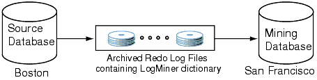
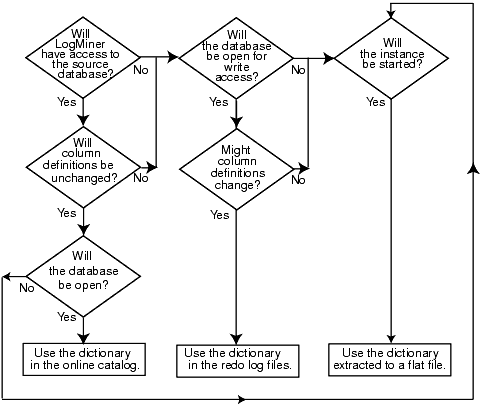

23 Using LogMiner to Analyze Redo Log Files
Oracle LogMiner, which is part of Oracle Database, enables you to query online and archived redo log files through a SQL interface.
Redo log files contain information about the history of activity on a database.
See the following topics:
You can use LogMiner from a command line or you can access it through the Oracle LogMiner Viewer graphical user interface. Oracle LogMiner Viewer is a part of Oracle Enterprise Manager. See the Oracle Enterprise Manager online Help for more information about Oracle LogMiner Viewer.
Note:
Thecontinuous_mine option for the dbms_logmnr.start_logmnr package is desupported in Oracle Database 19c (19.1), and is no longer available.
- LogMiner Benefits
All changes made to user data or to the database dictionary are recorded in the Oracle redo log files so that database recovery operations can be performed. - Introduction to LogMiner
These topics provide a brief introduction to LogMiner, including the following topics. - Using LogMiner in a CDB
You can use LogMiner in a multitenant container database (CDB). - LogMiner Dictionary Files and Redo Log Files
Before you begin using LogMiner, it is important to understand how LogMiner works with the LogMiner dictionary file (or files) and redo log files. This will help you to get accurate results and to plan the use of your system resources. - Starting LogMiner
Call theDBMS_LOGMNR.START_LOGMNRprocedure to start LogMiner. - Querying V$LOGMNR_CONTENTS for Redo Data of Interest
You access the redo data of interest by querying theV$LOGMNR_CONTENTSview. - Filtering and Formatting Data Returned to V$LOGMNR_CONTENTS
LogMiner can potentially deal with large amounts of information. You can limit the information that is returned to theV$LOGMNR_CONTENTSview, and the speed at which it is returned. - Reapplying DDL Statements Returned to V$LOGMNR_CONTENTS
Some DDL statements that you issue cause Oracle to internally execute one or more other DDL statements. - Calling DBMS_LOGMNR.START_LOGMNR Multiple Times
Even after you have successfully calledDBMS_LOGMNR.START_LOGMNRand selected from theV$LOGMNR_CONTENTSview, you can callDBMS_LOGMNR.START_LOGMNRagain without ending the current LogMiner session and specify different options and time or SCN ranges. - Supplemental Logging
Describes supplemental logging. - Accessing LogMiner Operational Information in Views
LogMiner operational information (as opposed to redo data) is contained in views. - Steps in a Typical LogMiner Session
Learn about the typical ways you can use LogMiner to extract and mine data. - Examples Using LogMiner
To see how you can use LogMiner for data mining, review the provided examples. - Supported Data Types, Storage Attributes, and Database and Redo Log File Versions
Describes information about data type and storage attribute support and the releases of the database and redo log files that are supported.
Parent topic: Other Utilities
23.1 LogMiner Benefits
All changes made to user data or to the database dictionary are recorded in the Oracle redo log files so that database recovery operations can be performed.
Because LogMiner provides a well-defined, easy-to-use, and comprehensive relational interface to redo log files, it can be used as a powerful data auditing tool, and also as a sophisticated data analysis tool.
Note:
LogMiner is intended for use as a debugging tool, to extract information from the redo logs to solve problems. It is not intended to be used for any third party replication of data in a production environment.The following list describes some key capabilities of LogMiner:
-
Pinpointing when a logical corruption to a database, such as errors made at the application level, may have begun. These might include errors such as those where the wrong rows were deleted because of incorrect values in a
WHEREclause, rows were updated with incorrect values, the wrong index was dropped, and so forth. For example, a user application could mistakenly update a database to give all employees 100 percent salary increases rather than 10 percent increases, or a database administrator (DBA) could accidently delete a critical system table. It is important to know exactly when an error was made so that you know when to initiate time-based or change-based recovery. This enables you to restore the database to the state it was in just before corruption. See Querying V$LOGMNR_CONTENTS Based on Column Values for details about how you can use LogMiner to accomplish this. -
Determining what actions you would have to take to perform fine-grained recovery at the transaction level. If you fully understand and take into account existing dependencies, then it may be possible to perform a table-specific undo operation to return the table to its original state. This is achieved by applying table-specific reconstructed SQL statements that LogMiner provides in the reverse order from which they were originally issued. See Scenario 1: Using LogMiner to Track Changes Made by a Specific User for an example.
Normally you would have to restore the table to its previous state, and then apply an archived redo log file to roll it forward.
-
Performance tuning and capacity planning through trend analysis. You can determine which tables get the most updates and inserts. That information provides a historical perspective on disk access statistics, which can be used for tuning purposes. See Scenario 2: Using LogMiner to Calculate Table Access Statistics for an example.
-
Performing postauditing. LogMiner can be used to track any data manipulation language (DML) and data definition language (DDL) statements run on the database, the order in which they were run, and who ran them. (However, to use LogMiner for such a purpose, you need to have an idea when the event occurred so that you can specify the appropriate logs for analysis; otherwise you might have to mine a large number of redo log files, which can take a long time. Consider using LogMiner as a complementary activity to auditing database use. See Auditing Database Activity in Oracle Database Administrator’s Guide.
Parent topic: Using LogMiner to Analyze Redo Log Files
23.2 Introduction to LogMiner
These topics provide a brief introduction to LogMiner, including the following topics.
- LogMiner Configuration
Learn about the objects that LogMiner analyzes, and see examples of configuration files. - Directing LogMiner Operations and Retrieving Data of Interest
You direct LogMiner operations using theDBMS_LOGMNRandDBMS_LOGMNR_DPL/SQL packages, and retrieve data of interest using theV$LOGMNR_CONTENTSview.
Parent topic: Using LogMiner to Analyze Redo Log Files
23.2.1 LogMiner Configuration
Learn about the objects that LogMiner analyzes, and see examples of configuration files.
- Objects in LogMiner Configuration Files
DataMiner Configuration files have four objects: the source database, the mining database, the LogMiner dictionary, and the redo log files containing the data of interest. - LogMiner Configuration Example
This example shows how you can generate redo logs on one Oracle Database release in one location, and send them to another Oracle Database of a different release in another location. - LogMiner Requirements
Learn about the requirements for the source and mining database, the data dictionary, the redo log files, and table and column name limits for databases that you want LogMiner to mine.
Parent topic: Introduction to LogMiner
23.2.1.1 Objects in LogMiner Configuration Files
DataMiner Configuration files have four objects: the source database, the mining database, the LogMiner dictionary, and the redo log files containing the data of interest.
-
The source database is the database that produces all the redo log files that you want LogMiner to analyze.
-
The mining database is the database that LogMiner uses when it performs the analysis.
-
The LogMiner dictionary enables LogMiner to provide table and column names, instead of internal object IDs, when it presents the redo log data that you request.
LogMiner uses the dictionary to translate internal object identifiers and data types to object names and external data formats. Without a dictionary, LogMiner returns internal object IDs, and presents data as binary data.
For example, consider the following SQL statement:
INSERT INTO HR.JOBS(JOB_ID, JOB_TITLE, MIN_SALARY, MAX_SALARY) VALUES('IT_WT','Technical Writer', 4000, 11000);When LogMiner delivers results without the LogMiner dictionary, LogMiner displays the following output:
insert into "UNKNOWN"."OBJ# 45522"("COL 1","COL 2","COL 3","COL 4") values (HEXTORAW('45465f4748'),HEXTORAW('546563686e6963616c20577269746572'), HEXTORAW('c229'),HEXTORAW('c3020b')); -
The redo log files contain the changes made to the database, or to the database dictionary.
Parent topic: LogMiner Configuration
23.2.1.2 LogMiner Configuration Example
This example shows how you can generate redo logs on one Oracle Database release in one location, and send them to another Oracle Database of a different release in another location.
In the following figure, you can see an example of a LogMiner configuration, in which the Source database is in Boston, and the Target database is in San Francisco.
The Source database in Boston generates redo log files that are archived and shipped to the database in San Francisco. A LogMiner dictionary has been extracted to these redo log files. The mining database, where LogMiner actually analyzes the redo log files, is in San Francisco. The Boston database is running Oracle Database 12g and the San Francisco database is running Oracle Database 19c.
Figure 23-1 Example LogMiner Database Configuration

Description of "Figure 23-1 Example LogMiner Database Configuration"
This example shows just one valid LogMiner configuration. Other valid configurations are those that use the same database for both the source and mining database, or use another method for providing the data dictionary.
Related Topics
Parent topic: LogMiner Configuration
23.2.1.3 LogMiner Requirements
Learn about the requirements for the source and mining database, the data dictionary, the redo log files, and table and column name limits for databases that you want LogMiner to mine.
LogMiner requires the following objects:
- A Source database and a Mining database, with the following characteristics:
- Both the Source database and the Mining database must be running on the same hardware platform.
- The Mining database can be the same as, or completely separate from, the Source database.
- The Mining database must run using either the same release or a later release of the Oracle Database software as the Source database.
- The Mining database must use the same character set (or a superset of the character set) that is used by the source database.
-
LogMiner dictionary
- The dictionary must be produced by the same Source database that generates the redo log files that you want LogMiner to analyze.
- All redo log files, with the following characteristics:
- The redo log files must be produced by the same source database.
- The redo log files must be associated with the same database
RESETLOGS SCN. - The redo log files must be from a release 8.0 or later Oracle Database. However, several of the LogMiner features introduced as of release 9.0.1 work only with redo log files produced on an Oracle9i or later database.
- The tables or column names selected for mining must not exceed 30 characters.
Note:
Datatypes and features added after Oracle Database 12c Release 2 (12.2) that use extended column formats greater than 30 characters, including JSON-formatted extended varchar2 columns and extended varchar column names, are only supported from theDBMS_ROLLING PL/SQL package, Oracle GoldenGate, and XStream.
Virtual column names that exceed 30 characters are UNSUPPORTED in
v$logmnr_contents (dba_logstdby_unsupported and
dba_rolling_unsupported views).
LogMiner does not allow you to mix redo log files from different databases, or to use a dictionary from a different database than the one that generated the redo log files that you want to analyze. LogMiner requires table or column names that are 30 characters or less.
Note:
You must enable supplemental logging before generating log files that will be analyzed by LogMiner.
When you enable supplemental logging, additional information is recorded in the redo stream that is needed to make the information in the redo log files useful to you. Therefore, at the very least, you must enable minimal supplemental logging, as the following SQL statement shows:
ALTER DATABASE ADD SUPPLEMENTAL LOG DATA;
To determine whether supplemental logging is enabled, query the V$DATABASE view, as the following SQL statement shows:
SELECT SUPPLEMENTAL_LOG_DATA_MIN FROM V$DATABASE;
If the query returns a value of YES or IMPLICIT,
then minimal supplemental logging is enabled.
Be aware that the LogMiner utility (DBMS_LOGMNR) does not support long
table or column names when supplemental logging is enabled. When using an online
dictionary, and without any supplement logging enabled,
v$logmnr_contents shows all names, and sql_undo or
sql_redo for the relevant objects. However, using the LogMiner
utility requires that you enable at least minimal supplemental logging. When mining
tables with table names or column names exceeding 30 characters, entries in
v$logmnr_contents such as the following appear:
select sql_redo , operation, seg_name, info
from v$logmnr_contents where seg_name =
upper('my_table_with_a_very_very_long_name_for_test') or seg_name =
upper('table_with_long_col_name') ;
SQL_REDO --- OPERATION -- SEG_NAME ----------------------- INFO --------------------------
Unsupported UNSUPPORTED MY_TABLE_W_A_VERY_VERY_LONG_NAME Object or Data type Unsupported
Unsupported UNSUPPORTED TABLE_WITH_LONG_COL_NAME Object or Data type Unsupported Accordingly, use LogMiner with tables and columns with names that are 30 characters or less.
Parent topic: LogMiner Configuration
23.2.2 Directing LogMiner Operations and Retrieving Data of Interest
You direct LogMiner operations using the DBMS_LOGMNR and DBMS_LOGMNR_D PL/SQL packages, and retrieve data of interest using the V$LOGMNR_CONTENTS view.
For example:
You must have the EXECUTE_CATALOG_ROLE role and the LOGMINING privilege to query the V$LOGMNR_CONTENTS view and to use the LogMiner PL/SQL packages.
Note:
When mining a specified time or SCN range of interest within archived logs generated by an Oracle RAC database, you must ensure that you have specified all archived logs from all redo threads that were active during that time or SCN range. If you fail to do this, then any queries of V$LOGMNR_CONTENTS return only partial results (based on the archived logs specified to LogMiner through the DBMS_LOGMNR.ADD_LOGFILE procedure).
The CONTINUOUS_MINE option for the dbms_logmnr.start_logmnr package is desupported in Oracle Database 19c (19.1), and is no longer available.
See Also:
Steps in a Typical LogMiner Session for an example of using LogMiner
Parent topic: Introduction to LogMiner
23.3 Using LogMiner in a CDB
You can use LogMiner in a multitenant container database (CDB).
The following sections discuss some differences to be aware of when using LogMiner in a CDB versus a non-CDB:
LogMiner supports CDBs that have PDBs of different character sets provided the root container has a character set that is a superset of all the PDBs.
To administer a multitenant environment you must have the CDB_DBA role.
- LogMiner V$ Views and DBA Views in a CDB
In a CDB, views used by LogMiner to show information about LogMiner sessions running in the system contain an additional column namedCON_ID. - The V$LOGMNR_CONTENTS View in a CDB
In a CDB, theV$LOGMNR_CONTENTSview and its associated functions are restricted to the root database. Several new columns exist inV$LOGMNR_CONTENTSin support of CDBs. - Enabling Supplemental Logging in a CDB
In a CDB, the syntax for enabling and disabling database-wide supplemental logging is the same as in a non-CDB database - Using a Flat File Dictionary in a CDB
You cannot take a dictionary snapshot for an entire CDB in a single flat file. You must be connected to a distinct PDB, and can take a snapshot of only that PDB in a flat file.
Related Topics
Parent topic: Using LogMiner to Analyze Redo Log Files
23.3.1 LogMiner V$ Views and DBA Views in a CDB
In a CDB, views used by LogMiner to show information about LogMiner sessions running in the system contain an additional column named CON_ID.
The CON_ID column identifies the container ID associated with the session for which information is being displayed. When you query the view from a pluggable database (PDB), only information associated with the database is displayed. The following views are affected by this new behavior:
-
V$LOGMNR_DICTIONARY_LOAD -
V$LOGMNR_LATCH -
V$LOGMNR_PROCESS -
V$LOGMNR_SESSION -
V$LOGMNR_STATS
Note:
To support CDBs, the V$LOGMNR_CONTENTS view has several other new columns in addition to CON_ID.
The following DBA views have analogous CDB views whose names begin with CDB.
| Type of Log View | DBA View | CDB View |
|---|---|---|
| LogMiner Log Views |
|
|
| LogMiner Purged Log Views |
|
|
| LogMiner Session Log Views |
|
|
The DBA views show only information related to sessions defined in the container in which they are queried.
The CDB views contain an additional CON_ID column, which identifies the container whose data a given row represents. When CDB views are queried from the root, they can be used to see information about all containers.
Parent topic: Using LogMiner in a CDB
23.3.2 The V$LOGMNR_CONTENTS View in a CDB
In a CDB, the V$LOGMNR_CONTENTS view and its associated functions are restricted to the root database. Several new columns exist in V$LOGMNR_CONTENTS in support of CDBs.
-
CON_ID— contains the ID associated with the container from which the query is executed. BecauseV$LOGMNR_CONTENTSis restricted to the root database, this column returns a value of 1 when a query is done on a CDB. -
SRC_CON_NAME— the PDB name. This information is available only when mining is performed with a LogMiner dictionary. -
SRC_CON_ID— the container ID of the PDB that generated the redo record. This information is available only when mining is performed with a LogMiner dictionary. -
SRC_CON_DBID— the PDB identifier. This information is available only when mining is performed with a current LogMiner dictionary. -
SRC_CON_GUID— contains the GUID associated with the PDB. This information is available only when mining is performed with a current LogMiner dictionary.
Parent topic: Using LogMiner in a CDB
23.3.3 Enabling Supplemental Logging in a CDB
In a CDB, the syntax for enabling and disabling database-wide supplemental logging is the same as in a non-CDB database
For example, use the following syntax when adding or dropping supplemental log data:
ALTER DATABASE [ADD|DROP] SUPPLEMENTAL LOG DATA ...
However, note the following:
-
In a CDB, supplemental logging levels that are enabled from
CDB$ROOTare enabled across the CDB. -
If at least minimal supplemental logging is enabled in
CDB$ROOT, then additional supplemental logging levels can be enabled at the PDB level. -
Supplemental logging levels enabled at the CDB level from
CDB$ROOTcannot be disabled at the PDB level. -
Dropping all supplemental logging from
CDB$ROOTdisables all supplemental logging across the CDB regardless of previous PDB level settings.
Supplemental logging operations started with CREATE TABLE and ALTER TABLE statements can be executed from either the CDB root or a PDB. They affect only the table to which they are applied.
Parent topic: Using LogMiner in a CDB
23.3.4 Using a Flat File Dictionary in a CDB
You cannot take a dictionary snapshot for an entire CDB in a single flat file. You must be connected to a distinct PDB, and can take a snapshot of only that PDB in a flat file.
Thus, when using a flat file dictionary, you can only mine the redo logs for the changes associated with the PDB whose data dictionary is contained within the flat file.
Parent topic: Using LogMiner in a CDB
23.4 LogMiner Dictionary Files and Redo Log Files
Before you begin using LogMiner, it is important to understand how LogMiner works with the LogMiner dictionary file (or files) and redo log files. This will help you to get accurate results and to plan the use of your system resources.
The following concepts are discussed in this section:
- LogMiner Dictionary Options
LogMiner requires a dictionary to translate object IDs into object names when it returns redo data to you. - Redo Log File Options
To mine data in the redo log files, LogMiner needs information about which redo log files to mine.
Parent topic: Using LogMiner to Analyze Redo Log Files
23.4.1 LogMiner Dictionary Options
LogMiner requires a dictionary to translate object IDs into object names when it returns redo data to you.
LogMiner gives you three options for supplying the dictionary:
-
Oracle recommends that you use this option when you will have access to the source database from which the redo log files were created and when no changes to the column definitions in the tables of interest are anticipated. This is the most efficient and easy-to-use option.
-
Extracting a LogMiner Dictionary to the Redo Log Files
Oracle recommends that you use this option when you do not expect to have access to the source database from which the redo log files were created, or if you anticipate that changes will be made to the column definitions in the tables of interest.
-
Extracting the LogMiner Dictionary to a Flat File
This option is maintained for backward compatibility with previous releases. This option does not guarantee transactional consistency. Oracle recommends that you use either the online catalog or extract the dictionary to redo log files instead.
Figure 23-2 shows a decision tree to help you select a LogMiner dictionary, depending on your situation.
Figure 23-2 Decision Tree for Choosing a LogMiner Dictionary

Description of "Figure 23-2 Decision Tree for Choosing a LogMiner Dictionary"
The following sections provide instructions on how to specify each of the available dictionary options.
- Using the Online Catalog
To direct LogMiner to use the dictionary currently in use for the database, specify the online catalog as your dictionary source when you start LogMiner. - Extracting a LogMiner Dictionary to the Redo Log Files
To extract a LogMiner dictionary to the redo log files, the database must be open and inARCHIVELOGmode and archiving must be enabled. - Extracting the LogMiner Dictionary to a Flat File
When the LogMiner dictionary is in a flat file, fewer system resources are used than when it is contained in the redo log files.
Parent topic: LogMiner Dictionary Files and Redo Log Files
23.4.1.1 Using the Online Catalog
To direct LogMiner to use the dictionary currently in use for the database, specify the online catalog as your dictionary source when you start LogMiner.
For example:
EXECUTE DBMS_LOGMNR.START_LOGMNR(- OPTIONS => DBMS_LOGMNR.DICT_FROM_ONLINE_CATALOG);
In addition to using the online catalog to analyze online redo log files, you can use it to analyze archived redo log files, if you are on the same system that generated the archived redo log files.
The online catalog contains the latest information about the database and may be the fastest way to start your analysis. Because DDL operations that change important tables are somewhat rare, the online catalog generally contains the information you need for your analysis.
Remember, however, that the online catalog can only reconstruct SQL statements that are executed on the latest version of a table. As soon as a table is altered, the online catalog no longer reflects the previous version of the table. This means that LogMiner will not be able to reconstruct any SQL statements that were executed on the previous version of the table. Instead, LogMiner generates nonexecutable SQL (including hexadecimal-to-raw formatting of binary values) in the SQL_REDO column of the V$LOGMNR_CONTENTS view similar to the following example:
insert into HR.EMPLOYEES(col#1, col#2) values (hextoraw('4a6f686e20446f65'),
hextoraw('c306'));"
The online catalog option requires that the database be open.
The online catalog option is not valid with the DDL_DICT_TRACKING option of DBMS_LOGMNR.START_LOGMNR.
Parent topic: LogMiner Dictionary Options
23.4.1.2 Extracting a LogMiner Dictionary to the Redo Log Files
To extract a LogMiner dictionary to the redo log files, the database must be open and in ARCHIVELOG mode and archiving must be enabled.
The dictionary extracted to the redo log files is guaranteed to be consistent (whereas the dictionary extracted to a flat file is not).
To extract dictionary information to the redo log files, run the PL/SQL
DBMS_LOGMNR_D.BUILD procedure with the
STORE_IN_REDO_LOGS option. Do not specify a file name or
location.
EXECUTE DBMS_LOGMNR_D.BUILD( - OPTIONS=> DBMS_LOGMNR_D.STORE_IN_REDO_LOGS);
The process of extracting the dictionary to the redo log files does consume
database resources, but if you limit the extraction to off-peak hours, then this should
not be a problem, and it is faster than extracting to a flat file. Depending on the size
of the dictionary, it may be contained in multiple redo log files. If the relevant redo
log files have been archived, then you can find out which redo log files contain the
start and end of an extracted dictionary. To do so, query the
V$ARCHIVED_LOG view, as follows:
SELECT NAME FROM V$ARCHIVED_LOG WHERE DICTIONARY_BEGIN='YES'; SELECT NAME FROM V$ARCHIVED_LOG WHERE DICTIONARY_END='YES';
Specify the names of the start and end redo log files, and other redo logs
in between them, with the ADD_LOGFILE procedure when you are preparing
to begin a LogMiner session.
Oracle recommends that you periodically back up the redo log files so that the information is saved and available at a later date. Ideally, this will not involve any extra steps; if your database is being properly managed, then there should already be a process in place for backing up and restoring archived redo log files. Again, because of the time required, it is good practice to do this during off-peak hours.
Parent topic: LogMiner Dictionary Options
23.4.1.3 Extracting the LogMiner Dictionary to a Flat File
When the LogMiner dictionary is in a flat file, fewer system resources are used than when it is contained in the redo log files.
Note:
The ability to create flat file dictionary dumps of pluggable databases (PDBs) is desupported in Oracle Database 19c, and desupported entirely in later releases.
In previous releases, using a flat file dictionary was one means of mining the redo logs for the changes associated with a specific PDB whose data dictionary was contained within the flat file. Oracle recommends that you call DBMS_LOGMNR.START_LOGMNR, and supply the system change number (SCN) or time range that you want to mine. The SCN or time range options of START_LOGMNR are enhanced to support mining of individual PDBs.
To extract database dictionary information to a flat file, use the
DBMS_LOGMNR_D.BUILD procedure with the
STORE_IN_FLAT_FILE option. Oracle recommends that you regularly
back up the dictionary extract to ensure correct analysis of older redo log
files.
The following steps describe how to extract a dictionary to a flat file. Steps 1 and 2 are preparation steps. You only need to do them once, and then you can extract a dictionary to a flat file as many times as you want to.
Related Topics
Parent topic: LogMiner Dictionary Options
23.4.2 Redo Log File Options
To mine data in the redo log files, LogMiner needs information about which redo log files to mine.
Changes made to the database that are found in these redo log files are delivered to you through the V$LOGMNR_CONTENTS view.
You can direct LogMiner to automatically and dynamically create a list of redo log files to analyze, or you can explicitly specify a list of redo log files for LogMiner to analyze, as follows:
-
Automatically
If LogMiner is being used on the source database, then you can direct LogMiner to find and create a list of redo log files for analysis automatically. Although this example specifies the dictionary from the online catalog, any LogMiner dictionary can be used.
Note:
Thecontinuous_mineoption for thedbms_logmnr.start_logmnrpackage is desupported in Oracle Database 19c (19.1), and is no longer available.LogMiner uses the database control file to find and adds redo log files that satisfy your specified time or SCN range to the LogMiner redo log file list. For example:
ALTER SESSION SET NLS_DATE_FORMAT = 'DD-MON-YYYY HH24:MI:SS'; EXECUTE DBMS_LOGMNR.START_LOGMNR( - STARTTIME => '01-Jan-2012 08:30:00', - ENDTIME => '01-Jan-2012 08:45:00', - OPTIONS => DBMS_LOGMNR.DICT_FROM_ONLINE_CATALOG + - );
(To avoid the need to specify the date format in the PL/SQL call to the
DBMS_LOGMNR.START_LOGMNRprocedure, this example uses the SQLALTERSESSION SETNLS_DATE_FORMATstatement first.)You can also direct LogMiner to automatically build a list of redo log files to analyze by specifying just one redo log file using
DBMS_LOGMNR.ADD_LOGFILE.The previously described method is more typical, however. -
Manually
Use the
DBMS_LOGMNR.ADD_LOGFILEprocedure to manually create a list of redo log files before you start LogMiner. After the first redo log file has been added to the list, each subsequently added redo log file must be from the same database and associated with the same database RESETLOGS SCN. When using this method, LogMiner need not be connected to the source database.For example, to start a new list of redo log files, specify the
NEWoption of theDBMS_LOGMNR.ADD_LOGFILEPL/SQL procedure to signal that this is the beginning of a new list. For example, enter the following to specify/oracle/logs/log1.f:EXECUTE DBMS_LOGMNR.ADD_LOGFILE( - LOGFILENAME => '/oracle/logs/log1.f', - OPTIONS => DBMS_LOGMNR.NEW);
If desired, add more redo log files by specifying the
ADDFILEoption of thePL/SQL DBMS_LOGMNR.ADD_LOGFILEprocedure. For example, enter the following to add/oracle/logs/log2.f:EXECUTE DBMS_LOGMNR.ADD_LOGFILE( - LOGFILENAME => '/oracle/logs/log2.f', - OPTIONS => DBMS_LOGMNR.ADDFILE);
To determine which redo log files are being analyzed in the current LogMiner session, you can query the
V$LOGMNR_LOGSview, which contains one row for each redo log file.
Parent topic: LogMiner Dictionary Files and Redo Log Files
23.5 Starting LogMiner
Call the DBMS_LOGMNR.START_LOGMNR procedure to start LogMiner.
Because the options available with the DBMS_LOGMNR.START_LOGMNR procedure allow you to control output to the V$LOGMNR_CONTENTS view, you must call DBMS_LOGMNR.START_LOGMNR before querying the V$LOGMNR_CONTENTS view.
When you start LogMiner, you can:
-
Specify how LogMiner should filter data it returns (for example, by starting and ending time or SCN value)
-
Specify options for formatting the data returned by LogMiner
-
Specify the LogMiner dictionary to use
The following list is a summary of LogMiner settings that you can specify with the OPTIONS parameter to DBMS_LOGMNR.START_LOGMNR and where to find more information about them.
-
DICT_FROM_ONLINE_CATALOG -
DICT_FROM_REDO_LOGS -
COMMITTED_DATA_ONLY -
SKIP_CORRUPTION -
NO_SQL_DELIMITER -
PRINT_PRETTY_SQL -
NO_ROWID_IN_STMT -
DDL_DICT_TRACKING
When you execute the DBMS_LOGMNR.START_LOGMNR procedure, LogMiner checks to ensure that the combination of options and parameters that you have specified is valid and that the dictionary and redo log files that you have specified are available. However, the V$LOGMNR_CONTENTS view is not populated until you query the view.
Note that parameters and options are not persistent across calls to DBMS_LOGMNR.START_LOGMNR. You must specify all desired parameters and options (including SCN and time ranges) each time you call DBMS_LOGMNR.START_LOGMNR.
Parent topic: Using LogMiner to Analyze Redo Log Files
23.6 Querying V$LOGMNR_CONTENTS for Redo Data of Interest
You access the redo data of interest by querying the V$LOGMNR_CONTENTS view.
(Note that you must have either the SYSDBA or LOGMINING privilege to query V$LOGMNR_CONTENTS.) This view provides historical information about changes made to the database, including (but not limited to) the following:
-
The type of change made to the database:
INSERT,UPDATE,DELETE, orDDL(OPERATIONcolumn). -
The SCN at which a change was made (
SCNcolumn). -
The SCN at which a change was committed (
COMMIT_SCNcolumn). -
The transaction to which a change belongs (
XIDUSN,XIDSLT, andXIDSQNcolumns). -
The table and schema name of the modified object (
SEG_NAMEandSEG_OWNERcolumns). -
The name of the user who issued the DDL or DML statement to make the change (
USERNAMEcolumn). -
If the change was due to a SQL DML statement, the reconstructed SQL statements showing SQL DML that is equivalent (but not necessarily identical) to the SQL DML used to generate the redo records (
SQL_REDOcolumn). -
If a password is part of the statement in a
SQL_REDOcolumn, then the password is encrypted.SQL_REDOcolumn values that correspond to DDL statements are always identical to the SQL DDL used to generate the redo records. -
If the change was due to a SQL DML change, the reconstructed SQL statements showing the SQL DML statements needed to undo the change (
SQL_UNDOcolumn).SQL_UNDOcolumns that correspond to DDL statements are alwaysNULL. TheSQL_UNDOcolumn may beNULLalso for some data types and for rolled back operations.
Note:
LogMiner supports Transparent Data Encryption (TDE), in that V$LOGMNR_CONTENTS shows DML operations performed on tables with encrypted columns (including the encrypted columns being updated), provided the LogMiner data dictionary contains the metadata for the object in question and provided the appropriate master key is in the Oracle wallet. The wallet must be open or V$LOGMNR_CONTENTS cannot interpret the associated redo records. TDE support is not available if the database is not open (either read-only or read-write).
See Also:
Oracle Database Advanced Security Guide for more information about TDE
Example of Querying V$LOGMNR_CONTENTS
To find any delete operations that a user named Ron performed on the oe.orders table, issue a SQL query similar to the following:
SELECT OPERATION, SQL_REDO, SQL_UNDO FROM V$LOGMNR_CONTENTS WHERE SEG_OWNER = 'OE' AND SEG_NAME = 'ORDERS' AND OPERATION = 'DELETE' AND USERNAME = 'RON';
The following output is produced by the query. The formatting may be different on your display than that shown here.
OPERATION SQL_REDO SQL_UNDO
DELETE delete from "OE"."ORDERS" insert into "OE"."ORDERS"
where "ORDER_ID" = '2413' ("ORDER_ID","ORDER_MODE",
and "ORDER_MODE" = 'direct' "CUSTOMER_ID","ORDER_STATUS",
and "CUSTOMER_ID" = '101' "ORDER_TOTAL","SALES_REP_ID",
and "ORDER_STATUS" = '5' "PROMOTION_ID")
and "ORDER_TOTAL" = '48552' values ('2413','direct','101',
and "SALES_REP_ID" = '161' '5','48552','161',NULL);
and "PROMOTION_ID" IS NULL
and ROWID = 'AAAHTCAABAAAZAPAAN';
DELETE delete from "OE"."ORDERS" insert into "OE"."ORDERS"
where "ORDER_ID" = '2430' ("ORDER_ID","ORDER_MODE",
and "ORDER_MODE" = 'direct' "CUSTOMER_ID","ORDER_STATUS",
and "CUSTOMER_ID" = '101' "ORDER_TOTAL","SALES_REP_ID",
and "ORDER_STATUS" = '8' "PROMOTION_ID")
and "ORDER_TOTAL" = '29669.9' values('2430','direct','101',
and "SALES_REP_ID" = '159' '8','29669.9','159',NULL);
and "PROMOTION_ID" IS NULL
and ROWID = 'AAAHTCAABAAAZAPAAe';
This output shows that user Ron deleted two rows from the oe.orders table. The reconstructed SQL statements are equivalent, but not necessarily identical, to the actual statement that Ron issued. The reason for this difference is that the original WHERE clause is not logged in the redo log files, so LogMiner can only show deleted (or updated or inserted) rows individually.
Therefore, even though a single DELETE statement may be responsible for the deletion of both rows, the output in V$LOGMNR_CONTENTS does not reflect that fact. The actual DELETE statement may have been DELETE FROM OE.ORDERS WHERE CUSTOMER_ID ='101' or it may have been DELETE FROM OE.ORDERS WHERE PROMOTION_ID = NULL.
- How the V$LOGMNR_CONTENTS View Is Populated
TheV$LOGMNR_CONTENTSfixed view is unlike other views in that it is not a selective presentation of data stored in a table. Instead, it is a relational presentation of the data that you request from the redo log files. - Querying V$LOGMNR_CONTENTS Based on Column Values
LogMiner lets you make queries based on column values. - Querying V$LOGMNR_CONTENTS Based on XMLType Columns and Tables
LogMiner supports redo generated forXMLTypecolumns.XMLTypedata stored asCLOBis supported when redo is generated at a compatibility setting of 11.0.0.0 or higher.
Parent topic: Using LogMiner to Analyze Redo Log Files
23.6.1 How the V$LOGMNR_CONTENTS View Is Populated
The V$LOGMNR_CONTENTS fixed view is unlike other views in that it is not a selective presentation of data stored in a table. Instead, it is a relational presentation of the data that you request from the redo log files.
LogMiner populates the view only in response to a query against it. You must successfully start LogMiner before you can query V$LOGMNR_CONTENTS.
When a SQL select operation is executed against the V$LOGMNR_CONTENTS view, the redo log files are read sequentially. Translated information from the redo log files is returned as rows in the V$LOGMNR_CONTENTS view. This continues until either the filter criteria specified at startup are met or the end of the redo log file is reached.
In some cases, certain columns in V$LOGMNR_CONTENTS may not be populated. For example:
-
The
TABLE_SPACEcolumn is not populated for rows where the value of theOPERATIONcolumn isDDL. This is because a DDL may operate on more than one tablespace. For example, a table can be created with multiple partitions spanning multiple table spaces; hence it would not be accurate to populate the column. -
LogMiner does not generate SQL redo or SQL undo for temporary tables. The
SQL_REDOcolumn will contain the string"/* No SQL_REDO for temporary tables */"and theSQL_UNDOcolumn will contain the string"/* No SQL_UNDO for temporary tables */".
LogMiner returns all the rows in SCN order unless you have used the COMMITTED_DATA_ONLY option to specify that only committed transactions should be retrieved. SCN order is the order normally applied in media recovery.
See Also:
Showing Only Committed Transactions for more information about the COMMITTED_DATA_ONLY option to DBMS_LOGMNR.START_LOGMNR
Note:
Because LogMiner populates the V$LOGMNR_CONTENTS view only in response to a query and does not store the requested data in the database, the following is true:
-
Every time you query
V$LOGMNR_CONTENTS, LogMiner analyzes the redo log files for the data you request. -
The amount of memory consumed by the query is not dependent on the number of rows that must be returned to satisfy a query.
-
The time it takes to return the requested data is dependent on the amount and type of redo log data that must be mined to find that data.
For the reasons stated in the previous note, Oracle recommends that you create a table to temporarily hold the results from a query of V$LOGMNR_CONTENTS if you need to maintain the data for further analysis, particularly if the amount of data returned by a query is small in comparison to the amount of redo data that LogMiner must analyze to provide that data.
Parent topic: Querying V$LOGMNR_CONTENTS for Redo Data of Interest
23.6.2 Querying V$LOGMNR_CONTENTS Based on Column Values
LogMiner lets you make queries based on column values.
For instance, you can perform a query to show all updates to the hr.employees table that increase salary more than a certain amount. Data such as this can be used to analyze system behavior and to perform auditing tasks.
LogMiner data extraction from redo log files is performed using two mine functions: DBMS_LOGMNR.MINE_VALUE and DBMS_LOGMNR.COLUMN_PRESENT. Support for these mine functions is provided by the REDO_VALUE and UNDO_VALUE columns in the V$LOGMNR_CONTENTS view.
The following is an example of how you could use the MINE_VALUE function to select all updates to hr.employees that increased the salary column to more than twice its original value:
SELECT SQL_REDO FROM V$LOGMNR_CONTENTS WHERE SEG_NAME = 'EMPLOYEES' AND SEG_OWNER = 'HR' AND OPERATION = 'UPDATE' AND DBMS_LOGMNR.MINE_VALUE(REDO_VALUE, 'HR.EMPLOYEES.SALARY') > 2*DBMS_LOGMNR.MINE_VALUE(UNDO_VALUE, 'HR.EMPLOYEES.SALARY');
As shown in this example, the MINE_VALUE function takes two arguments:
-
The first one specifies whether to mine the redo (
REDO_VALUE) or undo (UNDO_VALUE) portion of the data. The redo portion of the data is the data that is in the column after an insert, update, or delete operation; the undo portion of the data is the data that was in the column before an insert, update, or delete operation. It may help to think of theREDO_VALUEas the new value and theUNDO_VALUEas the old value. -
The second argument is a string that specifies the fully qualified name of the column to be mined (in this case,
hr.employees.salary). TheMINE_VALUEfunction always returns a string that can be converted back to the original data type.
- The Meaning of NULL Values Returned by the MINE_VALUE Function
Describes the meaning ofNULLvalues returned by theMINE_VALUEfunction. - Usage Rules for the MINE_VALUE and COLUMN_PRESENT Functions
Describes the usage rules that apply to theMINE_VALUEandCOLUMN_PRESENTfunctions. - Restrictions When Using the MINE_VALUE Function To Get an NCHAR Value
Describes restrictions when using theMINE_VALUEfunction.
Parent topic: Querying V$LOGMNR_CONTENTS for Redo Data of Interest
23.6.2.1 The Meaning of NULL Values Returned by the MINE_VALUE Function
Describes the meaning of NULL values returned by the MINE_VALUE function.
If the MINE_VALUE function returns a NULL value, then it can mean either:
-
The specified column is not present in the redo or undo portion of the data.
-
The specified column is present and has a null value.
To distinguish between these two cases, use the DBMS_LOGMNR.COLUMN_PRESENT function which returns a 1 if the column is present in the redo or undo portion of the data. Otherwise, it returns a 0. For example, suppose you wanted to find out the increment by which the values in the salary column were modified and the corresponding transaction identifier. You could issue the following SQL query:
SELECT (XIDUSN || '.' || XIDSLT || '.' || XIDSQN) AS XID, (DBMS_LOGMNR.MINE_VALUE(REDO_VALUE, 'HR.EMPLOYEES.SALARY') - DBMS_LOGMNR.MINE_VALUE(UNDO_VALUE, 'HR.EMPLOYEES.SALARY')) AS INCR_SAL FROM V$LOGMNR_CONTENTS WHERE OPERATION = 'UPDATE' AND DBMS_LOGMNR.COLUMN_PRESENT(REDO_VALUE, 'HR.EMPLOYEES.SALARY') = 1 AND DBMS_LOGMNR.COLUMN_PRESENT(UNDO_VALUE, 'HR.EMPLOYEES.SALARY') = 1;
Parent topic: Querying V$LOGMNR_CONTENTS Based on Column Values
23.6.2.2 Usage Rules for the MINE_VALUE and COLUMN_PRESENT Functions
Describes the usage rules that apply to the MINE_VALUE and COLUMN_PRESENT functions.
Specifically:
-
They can only be used within a LogMiner session.
-
They must be started in the context of a select operation from the
V$LOGMNR_CONTENTSview. -
They do not support
LONG,LONG RAW,CLOB,BLOB,NCLOB,ADT, orCOLLECTIONdata types.
Parent topic: Querying V$LOGMNR_CONTENTS Based on Column Values
23.6.2.3 Restrictions When Using the MINE_VALUE Function To Get an NCHAR Value
Describes restrictions when using the MINE_VALUE function.
If the DBMS_LOGMNR.MINE_VALUE function is used to get an NCHAR value that includes characters not found in the database character set, then those characters are returned as the replacement character (for example, an inverted question mark) of the database character set.
Parent topic: Querying V$LOGMNR_CONTENTS Based on Column Values
23.6.3 Querying V$LOGMNR_CONTENTS Based on XMLType Columns and Tables
LogMiner supports redo generated for XMLType columns.
XMLType data stored as CLOB is supported when redo is
generated at a compatibility setting of 11.0.0.0 or higher.
- How V$LOGMNR_CONTENTS Based on XMLType Columns and Tables are Queried
Depending on what XMLType storage you use, LogMiner presents theSQL_REDOinV$LOGMNR_CONTENTSin different ways. - Restrictions When Using LogMiner With XMLType Data
Describes restrictions when using LogMiner with XMLType data. - Example of a PL/SQL Procedure for Assembling XMLType Data
Example showing a procedure that can be used to mine and assemble XML redo for tables that contain out of line XML data.
Parent topic: Querying V$LOGMNR_CONTENTS for Redo Data of Interest
23.6.3.1 How V$LOGMNR_CONTENTS Based on XMLType Columns and Tables are Queried
Depending on what XMLType storage you use, LogMiner presents the
SQL_REDO in V$LOGMNR_CONTENTS in different
ways.
XMLType data stored as object-relational and binary XML is supported for redo generated at a compatibility setting of 11.2.0.3 and higher.
LogMiner presents the SQL_REDO in
V$LOGMNR_CONTENTS in different ways depending on the
XMLType storage. In all cases, the contents of the
SQL_REDO column, in combination with the STATUS column,
require careful scrutiny, and usually require reassembly before a SQL or PL/SQL statement can
be generated to redo the change. There can be cases when it is not possible to use the
SQL_REDO data to construct such a change. The examples in the following
subsections are based on XMLType stored as CLOB which is
generally the simplest to use for reconstruction of the complete row change.
Note:
XMLType data stored as CLOB was deprecated in
Oracle Database 12c Release 1 (12.1), and can be desupported. For any existing applications
that you plan to use on ADB, be aware that many XML schema-related features are not
supported
Querying V$LOGMNR_CONTENTS For Changes to Tables With XMLType Columns
The example in this section is for a table named XML_CLOB_COL_TAB that has the following columns:
- f1
NUMBER - f2
VARCHAR2(100) - f3
XMLTYPE - f4
XMLTYPE - f5
VARCHAR2(10)
Assume that a LogMiner session has been started with the logs and with the COMMITED_DATA_ONLY option. The following query is executed against V$LOGMNR_CONTENTS for changes to the XML_CLOB_COL_TAB table.
SELECT OPERATION, STATUS, SQL_REDO FROM V$LOGMNR_CONTENTS WHERE SEG_OWNER = 'SCOTT' AND TABLE_NAME = 'XML_CLOB_COL_TAB';
The query output looks similar to the following:
OPERATION STATUS SQL_REDO
INSERT 0 insert into "SCOTT"."XML_CLOB_COL_TAB"("F1","F2","F5") values
('5010','Aho40431','PETER')
XML DOC BEGIN 5 update "SCOTT"."XML_CLOB_COL_TAB" a set a."F3" = XMLType(:1)
where a."F1" = '5010' and a."F2" = 'Aho40431' and a."F5" = 'PETER'
XML DOC WRITE 5 XML Data
XML DOC WRITE 5 XML Data
XML DOC WRITE 5 XML Data
XML DOC END 5
In the SQL_REDO columns for the XML DOC WRITE operations there will be actual data for the XML document. It will not be the string 'XML Data'.
This output shows that the general model for an insert into a table with an XMLType column is the following:
- An initial insert with all of the scalar columns.
- An
XML DOC BEGINoperation with an update statement that sets the value for oneXMLTypecolumn using a bind variable. - One or more
XML DOC WRITEoperations with the data for the XML document. - An
XML DOC ENDoperation to indicate that all of the data for that XML document has been seen. - If there is more than one
XMLTypecolumn in the table, then steps 2 through 4 will be repeated for eachXMLTypecolumn that is modified by the original DML.
If the XML document is not stored as an out-of-line column, then there will be no XML DOC BEGIN, XML DOC WRITE, or XML DOC END operations for that column. The document will be included in an update statement similar to the following:
OPERATION STATUS SQL_REDO
UPDATE 0 update "SCOTT"."XML_CLOB_COL_TAB" a
set a."F3" = XMLType('<?xml version="1.0"?>
<PO pono="1">
<PNAME>Po_99</PNAME>
<CUSTNAME>Dave Davids</CUSTNAME>
</PO>')
where a."F1" = '5006' and a."F2" = 'Janosik' and a."F5" = 'MMM' Querying V$LOGMNR_CONTENTS For Changes to XMLType Tables
DMLs to XMLType tables are slightly different from DMLs to XMLType columns. The XML document represents the value for the row in the XMLType table. Unlike the XMLType column case, an initial insert cannot be done which is then followed by an update containing the XML document. Rather, the whole document must be assembled before anything can be inserted into the table.
Another difference for XMLType tables is the presence of the OBJECT_ID column. An object identifier is used to uniquely identify every object in an object table. For XMLType tables, this value is generated by Oracle Database when the row is inserted into the table. The OBJECT_ID value cannot be directly inserted into the table using SQL. Therefore, LogMiner cannot generate SQL_REDO which is executable that includes this value.
The V$LOGMNR_CONTENTS view has a new OBJECT_ID column which is populated for changes to XMLType tables. This value is the object identifier from the original table. However, even if this same XML document is inserted into the same XMLType table, a new object identifier will be generated. The SQL_REDO for subsequent DMLs, such as updates and deletes, on the XMLType table will include the object identifier in the WHERE clause to uniquely identify the row from the original table.
23.6.3.2 Restrictions When Using LogMiner With XMLType Data
Describes restrictions when using LogMiner with XMLType data.
Mining XMLType data should only be done when using the DBMS_LOGMNR.COMMITTED_DATA_ONLY option. Otherwise, incomplete changes could be displayed or changes which should be displayed as XML might be displayed as CLOB changes due to missing parts of the row change. This can lead to incomplete and invalid SQL_REDO for these SQL DML statements.
The SQL_UNDO column is not populated for changes to XMLType data.
23.6.3.3 Example of a PL/SQL Procedure for Assembling XMLType Data
Example showing a procedure that can be used to mine and assemble XML redo for tables that contain out of line XML data.
This shows how to assemble the XML data using a temporary LOB. Once the XML document is assembled, it can be used in a meaningful way. This example queries the assembled document for the EmployeeName element and then stores the returned name, the XML document and the SQL_REDO for the original DML in the EMPLOYEE_XML_DOCS table.
Note:
This procedure is an example only and is simplified. It is only intended to illustrate that DMLs to tables with XMLType data can be mined and assembled using LogMiner.
Before calling this procedure, all of the relevant logs must be added to a LogMiner session and DBMS_LOGMNR.START_LOGMNR() must be called with the COMMITTED_DATA_ONLY option. The MINE_AND_ASSEMBLE() procedure can then be called with the schema and table name of the table that has XML data to be mined.
-- table to store assembled XML documents
create table employee_xml_docs (
employee_name varchar2(100),
sql_stmt varchar2(4000),
xml_doc SYS.XMLType);
-- procedure to assemble the XML documents
create or replace procedure mine_and_assemble(
schemaname in varchar2,
tablename in varchar2)
AS
loc_c CLOB;
row_op VARCHAR2(100);
row_status NUMBER;
stmt VARCHAR2(4000);
row_redo VARCHAR2(4000);
xml_data VARCHAR2(32767 CHAR);
data_len NUMBER;
xml_lob clob;
xml_doc XMLType;
BEGIN
-- Look for the rows in V$LOGMNR_CONTENTS that are for the appropriate schema
-- and table name but limit it to those that are valid sql or that need assembly
-- because they are XML documents.
For item in ( SELECT operation, status, sql_redo FROM v$logmnr_contents
where seg_owner = schemaname and table_name = tablename
and status IN (DBMS_LOGMNR.VALID_SQL, DBMS_LOGMNR.ASSEMBLY_REQUIRED_SQL))
LOOP
row_op := item.operation;
row_status := item.status;
row_redo := item.sql_redo;
CASE row_op
WHEN 'XML DOC BEGIN' THEN
BEGIN
-- save statement and begin assembling XML data
stmt := row_redo;
xml_data := '';
data_len := 0;
DBMS_LOB.CreateTemporary(xml_lob, TRUE);
END;
WHEN 'XML DOC WRITE' THEN
BEGIN
-- Continue to assemble XML data
xml_data := xml_data || row_redo;
data_len := data_len + length(row_redo);
DBMS_LOB.WriteAppend(xml_lob, length(row_redo), row_redo);
END;
WHEN 'XML DOC END' THEN
BEGIN
-- Now that assembly is complete, we can use the XML document
xml_doc := XMLType.createXML(xml_lob);
insert into employee_xml_docs values
(extractvalue(xml_doc, '/EMPLOYEE/NAME'), stmt, xml_doc);
commit;
-- reset
xml_data := '';
data_len := 0;
xml_lob := NULL;
END;
WHEN 'INSERT' THEN
BEGIN
stmt := row_redo;
END;
WHEN 'UPDATE' THEN
BEGIN
stmt := row_redo;
END;
WHEN 'INTERNAL' THEN
DBMS_OUTPUT.PUT_LINE('Skip rows marked INTERNAL');
ELSE
BEGIN
stmt := row_redo;
DBMS_OUTPUT.PUT_LINE('Other - ' || stmt);
IF row_status != DBMS_LOGMNR.VALID_SQL then
DBMS_OUTPUT.PUT_LINE('Skip rows marked non-executable');
ELSE
dbms_output.put_line('Status : ' || row_status);
END IF;
END;
END CASE;
End LOOP;
End;
/
show errors;
This procedure can then be called to mine the changes to the SCOTT.XML_DATA_TAB and apply the DMLs.
EXECUTE MINE_AND_ASSEMBLE ('SCOTT', 'XML_DATA_TAB');
As a result of this procedure, the EMPLOYEE_XML_DOCS table will have a row for each out-of-line XML column that was changed. The EMPLOYEE_NAME column will have the value extracted from the XML document and the SQL_STMT column and the XML_DOC column reflect the original row change.
The following is an example query to the resulting table that displays only the employee name and SQL statement:
SELECT EMPLOYEE_NAME, SQL_STMT FROM EMPLOYEE_XML_DOCS;
EMPLOYEE_NAME SQL_STMT
Scott Davis update "SCOTT"."XML_DATA_TAB" a set a."F3" = XMLType(:1)
where a."F1" = '5000' and a."F2" = 'Chen' and a."F5" = 'JJJ'
Richard Harry update "SCOTT"."XML_DATA_TAB" a set a."F4" = XMLType(:1)
where a."F1" = '5000' and a."F2" = 'Chen' and a."F5" = 'JJJ'
Margaret Sally update "SCOTT"."XML_DATA_TAB" a set a."F4" = XMLType(:1)
where a."F1" = '5006' and a."F2" = 'Janosik' and a."F5" = 'MMM'23.7 Filtering and Formatting Data Returned to V$LOGMNR_CONTENTS
LogMiner can potentially deal with large amounts of information. You can limit the information that is returned to the V$LOGMNR_CONTENTS view, and the speed at which it is returned.
The following sections demonstrate how to specify these limits and their impact on the data returned when you query V$LOGMNR_CONTENTS.
In addition, LogMiner offers features for formatting the data that is returned to V$LOGMNR_CONTENTS, as described in the following sections:
You request each of these filtering and formatting features using parameters or options to the DBMS_LOGMNR.START_LOGMNR procedure.
- Showing Only Committed Transactions
When using theCOMMITTED_DATA_ONLYoption toDBMS_LOGMNR.START_LOGMNR, only rows belonging to committed transactions are shown in theV$LOGMNR_CONTENTSview. - Skipping Redo Corruptions
When you use theSKIP_CORRUPTIONoption toDBMS_LOGMNR.START_LOGMNR, any corruptions in the redo log files are skipped during select operations from theV$LOGMNR_CONTENTSview. - Filtering Data by Time
To filter data by time, set theSTARTTIMEandENDTIMEparameters in theDBMS_LOGMNR.START_LOGMNRprocedure. - Filtering Data by SCN
To filter data by SCN (system change number), use theSTARTSCNandENDSCNparameters to the PL/SQLDBMS_LOGMNR.START_LOGMNRprocedure. - Formatting Reconstructed SQL Statements for Re-execution
By default, aROWIDclause is included in the reconstructedSQL_REDOandSQL_UNDOstatements and the statements are ended with a semicolon. - Formatting the Appearance of Returned Data for Readability
LogMiner provides thePRINT_PRETTY_SQLoption that formats the appearance of returned data for readability.
Parent topic: Using LogMiner to Analyze Redo Log Files
23.7.1 Showing Only Committed Transactions
When using the COMMITTED_DATA_ONLY option to DBMS_LOGMNR.START_LOGMNR, only rows belonging to committed transactions are shown in the V$LOGMNR_CONTENTS view.
This enables you to filter out rolled back transactions, transactions that are in progress, and internal operations.
To enable this option, specify it when you start LogMiner, as follows:
EXECUTE DBMS_LOGMNR.START_LOGMNR(OPTIONS => - DBMS_LOGMNR.COMMITTED_DATA_ONLY);
When you specify the COMMITTED_DATA_ONLY option, LogMiner groups together all DML operations that belong to the same transaction. Transactions are returned in the order in which they were committed.
Note:
If the COMMITTED_DATA_ONLY option is specified and you issue a query, then LogMiner stages all redo records within a single transaction in memory until LogMiner finds the commit record for that transaction. Therefore, it is possible to exhaust memory, in which case an "Out of Memory" error will be returned. If this occurs, then you must restart LogMiner without the COMMITTED_DATA_ONLY option specified and reissue the query.
The default is for LogMiner to show rows corresponding to all transactions and to return them in the order in which they are encountered in the redo log files.
For example, suppose you start LogMiner without specifying the COMMITTED_DATA_ONLY option and you execute the following query:
SELECT (XIDUSN || '.' || XIDSLT || '.' || XIDSQN) AS XID,
USERNAME, SQL_REDO FROM V$LOGMNR_CONTENTS WHERE USERNAME != 'SYS'
AND SEG_OWNER IS NULL OR SEG_OWNER NOT IN ('SYS', 'SYSTEM');
The output is as follows. Both committed and uncommitted transactions are returned and rows from different transactions are interwoven.
XID USERNAME SQL_REDO
1.15.3045 RON set transaction read write;
1.15.3045 RON insert into "HR"."JOBS"("JOB_ID","JOB_TITLE",
"MIN_SALARY","MAX_SALARY") values ('9782',
'HR_ENTRY',NULL,NULL);
1.18.3046 JANE set transaction read write;
1.18.3046 JANE insert into "OE"."CUSTOMERS"("CUSTOMER_ID",
"CUST_FIRST_NAME","CUST_LAST_NAME",
"CUST_ADDRESS","PHONE_NUMBERS","NLS_LANGUAGE",
"NLS_TERRITORY","CREDIT_LIMIT","CUST_EMAIL",
"ACCOUNT_MGR_ID") values ('9839','Edgar',
'Cummings',NULL,NULL,NULL,NULL,
NULL,NULL,NULL);
1.9.3041 RAJIV set transaction read write;
1.9.3041 RAJIV insert into "OE"."CUSTOMERS"("CUSTOMER_ID",
"CUST_FIRST_NAME","CUST_LAST_NAME","CUST_ADDRESS",
"PHONE_NUMBERS","NLS_LANGUAGE","NLS_TERRITORY",
"CREDIT_LIMIT","CUST_EMAIL","ACCOUNT_MGR_ID")
values ('9499','Rodney','Emerson',NULL,NULL,NULL,NULL,
NULL,NULL,NULL);
1.15.3045 RON commit;
1.8.3054 RON set transaction read write;
1.8.3054 RON insert into "HR"."JOBS"("JOB_ID","JOB_TITLE",
"MIN_SALARY","MAX_SALARY") values ('9566',
'FI_ENTRY',NULL,NULL);
1.18.3046 JANE commit;
1.11.3047 JANE set transaction read write;
1.11.3047 JANE insert into "OE"."CUSTOMERS"("CUSTOMER_ID",
"CUST_FIRST_NAME","CUST_LAST_NAME",
"CUST_ADDRESS","PHONE_NUMBERS","NLS_LANGUAGE",
"NLS_TERRITORY","CREDIT_LIMIT","CUST_EMAIL",
"ACCOUNT_MGR_ID") values ('8933','Ronald',
'Frost',NULL,NULL,NULL,NULL,NULL,NULL,NULL);
1.11.3047 JANE commit;
1.8.3054 RON commit;
Now suppose you start LogMiner, but this time you specify the COMMITTED_DATA_ONLY option. If you execute the previous query again, then the output is as follows:
1.15.3045 RON set transaction read write;
1.15.3045 RON insert into "HR"."JOBS"("JOB_ID","JOB_TITLE",
"MIN_SALARY","MAX_SALARY") values ('9782',
'HR_ENTRY',NULL,NULL);
1.15.3045 RON commit;
1.18.3046 JANE set transaction read write;
1.18.3046 JANE insert into "OE"."CUSTOMERS"("CUSTOMER_ID",
"CUST_FIRST_NAME","CUST_LAST_NAME",
"CUST_ADDRESS","PHONE_NUMBERS","NLS_LANGUAGE",
"NLS_TERRITORY","CREDIT_LIMIT","CUST_EMAIL",
"ACCOUNT_MGR_ID") values ('9839','Edgar',
'Cummings',NULL,NULL,NULL,NULL,
NULL,NULL,NULL);
1.18.3046 JANE commit;
1.11.3047 JANE set transaction read write;
1.11.3047 JANE insert into "OE"."CUSTOMERS"("CUSTOMER_ID",
"CUST_FIRST_NAME","CUST_LAST_NAME",
"CUST_ADDRESS","PHONE_NUMBERS","NLS_LANGUAGE",
"NLS_TERRITORY","CREDIT_LIMIT","CUST_EMAIL",
"ACCOUNT_MGR_ID") values ('8933','Ronald',
'Frost',NULL,NULL,NULL,NULL,NULL,NULL,NULL);
1.11.3047 JANE commit;
1.8.3054 RON set transaction read write;
1.8.3054 RON insert into "HR"."JOBS"("JOB_ID","JOB_TITLE",
"MIN_SALARY","MAX_SALARY") values ('9566',
'FI_ENTRY',NULL,NULL);
1.8.3054 RON commit;
Because the COMMIT statement for the 1.15.3045 transaction was issued before the COMMIT statement for the 1.18.3046 transaction, the entire 1.15.3045 transaction is returned first. This is true even though the 1.18.3046 transaction started before the 1.15.3045 transaction. None of the 1.9.3041 transaction is returned because a COMMIT statement was never issued for it.
See Also:
See Examples Using LogMiner for a complete example that uses the COMMITTED_DATA_ONLY option
23.7.2 Skipping Redo Corruptions
When you use the SKIP_CORRUPTION option to DBMS_LOGMNR.START_LOGMNR, any corruptions in the redo log files are skipped during select operations from the V$LOGMNR_CONTENTS view.
For every corrupt redo record encountered, a row is returned that contains the value CORRUPTED_BLOCKS in the OPERATION column, 1343 in the STATUS column, and the number of blocks skipped in the INFO column.
Be aware that the skipped records may include changes to ongoing transactions in the corrupted blocks; such changes will not be reflected in the data returned from the V$LOGMNR_CONTENTS view.
The default is for the select operation to terminate at the first corruption it encounters in the redo log file.
The following SQL example shows how this option works:
-- Add redo log files of interest. -- EXECUTE DBMS_LOGMNR.ADD_LOGFILE(- logfilename => '/usr/oracle/data/db1arch_1_16_482701534.log' - options => DBMS_LOGMNR.NEW); -- Start LogMiner -- EXECUTE DBMS_LOGMNR.START_LOGMNR(); -- Select from the V$LOGMNR_CONTENTS view. This example shows corruptions are -- in the redo log files. -- SELECT rbasqn, rbablk, rbabyte, operation, status, info FROM V$LOGMNR_CONTENTS; ERROR at line 3: ORA-00368: checksum error in redo log block ORA-00353: log corruption near block 6 change 73528 time 11/06/2011 11:30:23 ORA-00334: archived log: /usr/oracle/data/dbarch1_16_482701534.log -- Restart LogMiner. This time, specify the SKIP_CORRUPTION option. -- EXECUTE DBMS_LOGMNR.START_LOGMNR(- options => DBMS_LOGMNR.SKIP_CORRUPTION); -- Select from the V$LOGMNR_CONTENTS view again. The output indicates that -- corrupted blocks were skipped: CORRUPTED_BLOCKS is in the OPERATION -- column, 1343 is in the STATUS column, and the number of corrupt blocks -- skipped is in the INFO column. -- SELECT rbasqn, rbablk, rbabyte, operation, status, info FROM V$LOGMNR_CONTENTS; RBASQN RBABLK RBABYTE OPERATION STATUS INFO 13 2 76 START 0 13 2 76 DELETE 0 13 3 100 INTERNAL 0 13 3 380 DELETE 0 13 0 0 CORRUPTED_BLOCKS 1343 corrupt blocks 4 to 19 skipped 13 20 116 UPDATE 0
23.7.3 Filtering Data by Time
To filter data by time, set the STARTTIME and ENDTIME parameters in the DBMS_LOGMNR.START_LOGMNR procedure.
To avoid the need to specify the date format in the call to the PL/SQL
DBMS_LOGMNR.START_LOGMNR procedure, you can use the SQL ALTER
SESSION SET NLS_DATE_FORMAT statement first, as shown in the following
example.
ALTER SESSION SET NLS_DATE_FORMAT = 'DD-MON-YYYY HH24:MI:SS';
EXECUTE DBMS_LOGMNR.START_LOGMNR( -
DICTFILENAME => '/oracle/database/dictionary.ora', -
STARTTIME => '01-Jan-2019 08:30:00', -
ENDTIME => '01-Jan-2019 08:45:00'-
);
The timestamps should not be used to infer ordering of redo records. You can infer the order of redo records by using the SCN.
Note:
You must add log files before filtering. Continuous logging is no longer
supported. If logfiles have not been added that match the time or the SCN that you
provide, then DBMS_LOGMNR.START_LOGMNR fails with the error
1291 ORA-01291: missing logfile.
23.7.4 Filtering Data by SCN
To filter data by SCN (system change number), use the STARTSCN and ENDSCN parameters to the PL/SQL DBMS_LOGMNR.START_LOGMNR procedure.
For example:
EXECUTE DBMS_LOGMNR.START_LOGMNR(-
STARTSCN => 621047, -
ENDSCN => 625695, -
OPTIONS => DBMS_LOGMNR.DICT_FROM_ONLINE_CATALOG + -
);
The STARTSCN and ENDSCN parameters override the STARTTIME and ENDTIME parameters in situations where all are specified.
Note:
You must add log files before filtering. Continuous logging is no longer
supported. If logfiles have not been added that match the time or the SCN that you
provide, then DBMS_LOGMNR.START_LOGMNR fails with the error
1291 ORA-01291: missing logfile.
23.7.5 Formatting Reconstructed SQL Statements for Re-execution
By default, a ROWID clause is included in the reconstructed SQL_REDO and SQL_UNDO statements and the statements are ended with a semicolon.
However, you can override the default settings, as follows:
-
Specify the
NO_ROWID_IN_STMToption when you start LogMiner.This excludes the
ROWIDclause from the reconstructed statements. Because row IDs are not consistent between databases, if you intend to re-execute theSQL_REDOorSQL_UNDOstatements against a different database than the one against which they were originally executed, then specify theNO_ROWID_IN_STMToption when you start LogMiner. -
Specify the
NO_SQL_DELIMITERoption when you start LogMiner.This suppresses the semicolon from the reconstructed statements. This is helpful for applications that open a cursor and then execute the reconstructed statements.
Note that if the STATUS field of the V$LOGMNR_CONTENTS view contains the value 2 (invalid sql), then the associated SQL statement cannot be executed.
23.7.6 Formatting the Appearance of Returned Data for Readability
LogMiner provides the PRINT_PRETTY_SQL option that formats the appearance of returned data for readability.
Sometimes a query can result in a large number of columns containing reconstructed SQL statements, which can be visually busy and hard to read. LogMiner provides the PRINT_PRETTY_SQL option to address this problem. The PRINT_PRETTY_SQL option to the DBMS_LOGMNR.START_LOGMNR procedure formats the reconstructed SQL statements as follows, which makes them easier to read:
insert into "HR"."JOBS"
values
"JOB_ID" = '9782',
"JOB_TITLE" = 'HR_ENTRY',
"MIN_SALARY" IS NULL,
"MAX_SALARY" IS NULL;
update "HR"."JOBS"
set
"JOB_TITLE" = 'FI_ENTRY'
where
"JOB_TITLE" = 'HR_ENTRY' and
ROWID = 'AAAHSeAABAAAY+CAAX';
update "HR"."JOBS"
set
"JOB_TITLE" = 'FI_ENTRY'
where
"JOB_TITLE" = 'HR_ENTRY' and
ROWID = 'AAAHSeAABAAAY+CAAX';
delete from "HR"."JOBS"
where
"JOB_ID" = '9782' and
"JOB_TITLE" = 'FI_ENTRY' and
"MIN_SALARY" IS NULL and
"MAX_SALARY" IS NULL and
ROWID = 'AAAHSeAABAAAY+CAAX';
SQL statements that are reconstructed when the PRINT_PRETTY_SQL option is enabled are not executable, because they do not use standard SQL syntax.
See Also:
Examples Using LogMiner for a complete example of using the PRINT_PRETTY_SQL option
23.8 Reapplying DDL Statements Returned to V$LOGMNR_CONTENTS
Some DDL statements that you issue cause Oracle to internally execute one or more other DDL statements.
To reapply SQL DDL from the SQL_REDO or SQL_UNDO columns of the V$LOGMNR_CONTENTS view as it was originally applied to the database, do not execute statements that were executed internally by Oracle.
Note:
If you execute DML statements that were executed internally by Oracle, then you may corrupt your database. See Step 5 of Example 4: Using the LogMiner Dictionary in the Redo Log Files for an example.
To differentiate between DDL statements that were issued by a user from those that were issued internally by Oracle, query the INFO column of V$LOGMNR_CONTENTS. The value of the INFO column indicates whether the DDL was executed by a user or by Oracle.
To reapply SQL DDL as it was originally applied, re-execute the DDL SQL contained in the SQL_REDO or SQL_UNDO column of V$LOGMNR_CONTENTS only if the INFO column contains the value USER_DDL.
Parent topic: Using LogMiner to Analyze Redo Log Files
23.9 Calling DBMS_LOGMNR.START_LOGMNR Multiple Times
Even after you have successfully called DBMS_LOGMNR.START_LOGMNR and selected from the V$LOGMNR_CONTENTS view, you can call DBMS_LOGMNR.START_LOGMNR again without ending the current LogMiner session and specify different options and time or SCN ranges.
The following list presents reasons why you might want to do this:
-
You want to limit the amount of redo data that LogMiner has to analyze.
-
You want to specify different options. For example, you might decide to specify the
PRINT_PRETTY_SQLoption or that you only want to see committed transactions (so you specify theCOMMITTED_DATA_ONLYoption). -
You want to change the time or SCN range to be analyzed.
Examples: Calling DBMS_LOGMNR.START_LOGMNR Multiple Times
The following are some examples of when it could be useful to call DBMS_LOGMNR.START_LOGMNR multiple times.
Example 1: Mining Only a Subset of the Data in the Redo Log Files
Suppose the list of redo log files that LogMiner has to mine include those generated for an entire week. However, you want to analyze only what happened from 12:00 to 1:00 each day. You could do this most efficiently by:
-
Calling
DBMS_LOGMNR.START_LOGMNRwith this time range for Monday. -
Selecting changes from the
V$LOGMNR_CONTENTSview. -
Repeating Steps 1 and 2 for each day of the week.
If the total amount of redo data is large for the week, then this method would make the whole analysis much faster, because only a small subset of each redo log file in the list would be read by LogMiner.
Example 2: Adjusting the Time Range or SCN Range
Suppose you specify a redo log file list and specify a time (or SCN) range when you start LogMiner. When you query the V$LOGMNR_CONTENTS view, you find that only part of the data of interest is included in the time range you specified. You can call DBMS_LOGMNR.START_LOGMNR again to expand the time range by an hour (or adjust the SCN range).
Example 3: Analyzing Redo Log Files As They Arrive at a Remote Database
Suppose you have written an application to analyze changes or to replicate changes from one database to another database. The source database sends its redo log files to the mining database and drops them into an operating system directory. Your application:
-
Adds all redo log files currently in the directory to the redo log file list
-
Calls
DBMS_LOGMNR.START_LOGMNRwith appropriate settings and selects from theV$LOGMNR_CONTENTSview -
Adds additional redo log files that have newly arrived in the directory
-
Repeats Steps 2 and 3, indefinitely
Parent topic: Using LogMiner to Analyze Redo Log Files
23.10 Supplemental Logging
Describes supplemental logging.
Redo log files are generally used for instance recovery and media recovery. The data needed for such operations is automatically recorded in the redo log files. However, a redo-based application may require that additional columns be logged in the redo log files. The process of logging these additional columns is called supplemental logging.
By default, Oracle Database does not provide any supplemental logging, which means that by default LogMiner is not usable. Therefore, you must enable at least minimal supplemental logging before generating log files which will be analyzed by LogMiner.
The following are examples of situations in which additional columns may be needed:
-
An application that applies reconstructed SQL statements to a different database must identify the update statement by a set of columns that uniquely identify the row (for example, a primary key), not by the
ROWIDshown in the reconstructed SQL returned by theV$LOGMNR_CONTENTSview, because theROWIDof one database will be different and therefore meaningless in another database. -
An application may require that the before-image of the whole row be logged, not just the modified columns, so that tracking of row changes is more efficient.
A supplemental log group is the set of additional columns to be logged when supplemental logging is enabled. There are two types of supplemental log groups that determine when columns in the log group are logged:
-
Unconditional supplemental log groups: The before-images of specified columns are logged any time a row is updated, regardless of whether the update affected any of the specified columns. This is sometimes referred to as an ALWAYS log group.
-
Conditional supplemental log groups: The before-images of all specified columns are logged only if at least one of the columns in the log group is updated.
Supplemental log groups can be system-generated or user-defined.
In addition to the two types of supplemental logging, there are two levels of supplemental logging, as described in the following sections:
- Database-Level Supplemental Logging
LogMiner provides different types of database-level supplemental logging: minimal supplemental logging, identification key logging, and procedural supplemental logging, as described in these sections. - Disabling Database-Level Supplemental Logging
Disable database-level supplemental logging using the SQLALTER DATABASEstatement with theDROP SUPPLEMENTAL LOGGINGclause. - Table-Level Supplemental Logging
Table-level supplemental logging specifies, at the table level, which columns are to be supplementally logged. - Tracking DDL Statements in the LogMiner Dictionary
LogMiner automatically builds its own internal dictionary from the LogMiner dictionary that you specify when you start LogMiner (either an online catalog, a dictionary in the redo log files, or a flat file). - DDL_DICT_TRACKING and Supplemental Logging Settings
Describes interactions that occur when various settings of dictionary tracking and supplemental logging are combined. - DDL_DICT_TRACKING and Specified Time or SCN Ranges
Because LogMiner must not miss a DDL statement if it is to ensure the consistency of its dictionary, LogMiner may start reading redo log files before your requested starting time or SCN (as specified withDBMS_LOGMNR.START_LOGMNR) when theDDL_DICT_TRACKINGoption is enabled.
Parent topic: Using LogMiner to Analyze Redo Log Files
23.10.1 Database-Level Supplemental Logging
LogMiner provides different types of database-level supplemental logging: minimal supplemental logging, identification key logging, and procedural supplemental logging, as described in these sections.
Minimal supplemental logging does not impose significant overhead on the database generating the redo log files. However, enabling database-wide identification key logging can impose overhead on the database generating the redo log files. Oracle recommends that you at least enable minimal supplemental logging for LogMiner.
- Minimal Supplemental Logging
Minimal supplemental logging logs the minimal amount of information needed for LogMiner to identify, group, and merge the redo operations associated with DML changes. - Database-Level Identification Key Logging
Identification key logging is necessary when redo log files will not be mined at the source database instance, for example, when the redo log files will be mined at a logical standby database. - Procedural Supplemental Logging
Procedural supplemental logging causes LogMiner to log certain procedural invocations to redo, so that they can be replicated by rolling upgrades or Oracle GoldenGate.
Parent topic: Supplemental Logging
23.10.1.1 Minimal Supplemental Logging
Minimal supplemental logging logs the minimal amount of information needed for LogMiner to identify, group, and merge the redo operations associated with DML changes.
It ensures that LogMiner (and any product building on LogMiner technology) has sufficient information to support chained rows and various storage arrangements, such as cluster tables and index-organized tables. To enable minimal supplemental logging, execute the following SQL statement:
ALTER DATABASE ADD SUPPLEMENTAL LOG DATA;
Parent topic: Database-Level Supplemental Logging
23.10.1.2 Database-Level Identification Key Logging
Identification key logging is necessary when redo log files will not be mined at the source database instance, for example, when the redo log files will be mined at a logical standby database.
Using database identification key logging, you can enable database-wide before-image
logging for all updates by specifying one or more of the following options to the SQL
ALTER DATABASE ADD SUPPLEMENTAL LOG statement:
-
ALLsystem-generated unconditional supplemental log groupThis option specifies that when a row is updated, all columns of that row (except for LOBs,
LONGS, andADTs) are placed in the redo log file.To enable all column logging at the database level, run the following statement:
SQL> ALTER DATABASE ADD SUPPLEMENTAL LOG DATA (ALL) COLUMNS;
-
PRIMARY KEYsystem-generated unconditional supplemental log groupThis option causes the database to place all columns of a row's primary key in the redo log file whenever a row containing a primary key is updated (even if no value in the primary key has changed).
If a table does not have a primary key, but has one or more non-null unique index key constraints or index keys, then one of the unique index keys is chosen for logging as a means of uniquely identifying the row being updated.
If the table has neither a primary key nor a non-null unique index key, then all columns except
LONGand LOB are supplementally logged; this is equivalent to specifyingALLsupplemental logging for that row. Therefore, Oracle recommends that when you use database-level primary key supplemental logging, all or most tables should be defined to have primary or unique index keys.To enable primary key logging at the database level, run the following statement:
SQL> ALTER DATABASE ADD SUPPLEMENTAL LOG DATA (PRIMARY KEY) COLUMNS;
-
UNIQUEsystem-generated conditional supplemental log groupThis option causes the database to place all columns of a row's composite unique key or bitmap index in the redo log file, if any column belonging to the composite unique key or bitmap index is modified. The unique key can be due either to a unique constraint, or to a unique index.
To enable unique index key and bitmap index logging at the database level, execute the following statement:
SQL> ALTER DATABASE ADD SUPPLEMENTAL LOG DATA (UNIQUE) COLUMNS;
-
FOREIGN KEYsystem-generated conditional supplemental log groupThis option causes the database to place all columns of a row's foreign key in the redo log file if any column belonging to the foreign key is modified.
To enable foreign key logging at the database level, execute the following SQL statement:
ALTER DATABASE ADD SUPPLEMENTAL LOG DATA (FOREIGN KEY) COLUMNS;
Note:
Regardless of whether identification key logging is enabled, the SQL statements returned by LogMiner always contain the
ROWIDclause. You can filter out theROWIDclause by using theNO_ROWID_IN_STMToption to theDBMS_LOGMNR.START_LOGMNRprocedure call. See Formatting Reconstructed SQL Statements for Re-execution for details.
Keep the following in mind when you use identification key logging:
-
If the database is open when you enable identification key logging, then all DML cursors in the cursor cache are invalidated. This can affect performance until the cursor cache is repopulated.
-
When you enable identification key logging at the database level, minimal supplemental logging is enabled implicitly.
- If you specify
ENABLE NOVALIDATEfor the primary key, then the primary key will not be considered a valid identification key. If there are no valid unique constraints, then all scalar columns are logged. Out of line columns (for example, LOBs, XML, 32k varchar, and so on) are never supplementally logged. -
Supplemental logging statements are cumulative. If you issue the following SQL statements, then both primary key and unique key supplemental logging is enabled:
ALTER DATABASE ADD SUPPLEMENTAL LOG DATA (PRIMARY KEY) COLUMNS; ALTER DATABASE ADD SUPPLEMENTAL LOG DATA (UNIQUE) COLUMNS;
Parent topic: Database-Level Supplemental Logging
23.10.1.3 Procedural Supplemental Logging
Procedural supplemental logging causes LogMiner to log certain procedural invocations to redo, so that they can be replicated by rolling upgrades or Oracle GoldenGate.
Procedural supplemental logging must be enabled for rolling upgrades and Oracle GoldenGate to support replication of AQ queue tables, hierarchy-enabled tables, and tables with SDO_TOPO_GEOMETRY or SDO_GEORASTER columns. Use the following SQL statement to enable procedural supplemental logging:
ALTER DATABASE ADD SUPPLEMENTAL LOG DATA FOR PROCEDURAL REPLICATION END SUBHEADINGIf procedural supplemental logging is enabled, then minimal supplemental logging cannot be dropped unless procedural supplemental logging is dropped first.
Parent topic: Database-Level Supplemental Logging
23.10.2 Disabling Database-Level Supplemental Logging
Disable database-level supplemental logging using the SQL ALTER DATABASE statement with the DROP SUPPLEMENTAL LOGGING clause.
You can drop supplemental logging attributes incrementally. For example, suppose you issued the following SQL statements, in the following order:
ALTER DATABASE ADD SUPPLEMENTAL LOG DATA (PRIMARY KEY) COLUMNS;ALTER DATABASE ADD SUPPLEMENTAL LOG DATA (UNIQUE) COLUMNS;ALTER DATABASE DROP SUPPLEMENTAL LOG DATA (PRIMARY KEY) COLUMNS;ALTER DATABASE DROP SUPPLEMENTAL LOG DATA;
The statements would have the following effects:
-
After the first statement, primary key supplemental logging is enabled.
-
After the second statement, primary key and unique key supplemental logging are enabled.
-
After the third statement, only unique key supplemental logging is enabled.
-
After the fourth statement, all supplemental logging is not disabled. The following error is returned:
ORA-32589: unable to drop minimal supplemental logging.
To disable all database supplemental logging, you must first disable any identification key logging that has been enabled, then disable minimal supplemental logging. The following example shows the correct order:
ALTER DATABASE ADD SUPPLEMENTAL LOG DATA (PRIMARY KEY) COLUMNS; ALTER DATABASE ADD SUPPLEMENTAL LOG DATA (UNIQUE) COLUMNS; ALTER DATABASE DROP SUPPLEMENTAL LOG DATA (PRIMARY KEY) COLUMNS; ALTER DATABASE DROP SUPPLEMENTAL LOG DATA (UNIQUE) COLUMNS; ALTER DATABASE DROP SUPPLEMENTAL LOG DATA;
Dropping minimal supplemental log data is allowed only if no other variant of database-level supplemental logging is enabled.
Parent topic: Supplemental Logging
23.10.3 Table-Level Supplemental Logging
Table-level supplemental logging specifies, at the table level, which columns are to be supplementally logged.
You can use identification key logging or user-defined conditional and unconditional supplemental log groups to log supplemental information, as described in the following sections.
- Table-Level Identification Key Logging
Identification key logging at the table level offers the same options as those provided at the database level: all, primary key, foreign key, and unique key. - Table-Level User-Defined Supplemental Log Groups
In addition to table-level identification key logging, Oracle supports user-defined supplemental log groups. - Usage Notes for User-Defined Supplemental Log Groups
Hints for using user-defined supplemental log groups.
Parent topic: Supplemental Logging
23.10.3.1 Table-Level Identification Key Logging
Identification key logging at the table level offers the same options as those provided at the database level: all, primary key, foreign key, and unique key.
However, when you specify identification key logging at the table level, only the specified table is affected. For example, if you enter the following SQL statement (specifying database-level supplemental logging), then whenever a column in any database table is changed, the entire row containing that column (except columns for LOBs, LONGs, and ADTs) will be placed in the redo log file:
ALTER DATABASE ADD SUPPLEMENTAL LOG DATA (ALL) COLUMNS;
However, if you enter the following SQL statement (specifying table-level supplemental logging) instead, then only when a column in the employees table is changed will the entire row (except for LOB, LONGs, and ADTs) of the table be placed in the redo log file. If a column changes in the departments table, then only the changed column will be placed in the redo log file.
ALTER TABLE HR.EMPLOYEES ADD SUPPLEMENTAL LOG DATA (ALL) COLUMNS;
Keep the following in mind when you use table-level identification key logging:
-
If the database is open when you enable identification key logging on a table, then all DML cursors for that table in the cursor cache are invalidated. This can affect performance until the cursor cache is repopulated.
-
Supplemental logging statements are cumulative. If you issue the following SQL statements, then both primary key and unique index key table-level supplemental logging is enabled:
ALTER TABLE HR.EMPLOYEES ADD SUPPLEMENTAL LOG DATA (PRIMARY KEY) COLUMNS; ALTER TABLE HR.EMPLOYEES ADD SUPPLEMENTAL LOG DATA (UNIQUE) COLUMNS;
See Database-Level Identification Key Logging for a description of each of the identification key logging options.
Parent topic: Table-Level Supplemental Logging
23.10.3.2 Table-Level User-Defined Supplemental Log Groups
In addition to table-level identification key logging, Oracle supports user-defined supplemental log groups.
With user-defined supplemental log groups, you can specify which columns are supplementally logged. You can specify conditional or unconditional log groups, as follows:
-
User-defined unconditional log groups
To enable supplemental logging that uses user-defined unconditional log groups, use the
ALWAYSclause as shown in the following example:ALTER TABLE HR.EMPLOYEES ADD SUPPLEMENTAL LOG GROUP emp_parttime (EMPLOYEE_ID, LAST_NAME, DEPARTMENT_ID) ALWAYS;
This creates a log group named
emp_parttimeon thehr.employeestable that consists of the columnsemployee_id,last_name, anddepartment_id. These columns are logged every time anUPDATEstatement is executed on thehr.employeestable, regardless of whether the update affected these columns. (To have the entire row image logged any time an update is made, use table-levelALLidentification key logging, as described previously).Note:
LOB,
LONG, andADTcolumns cannot be supplementally logged. -
User-defined conditional supplemental log groups
To enable supplemental logging that uses user-defined conditional log groups, omit the
ALWAYSclause from the SQLALTERTABLEstatement, as shown in the following example:ALTER TABLE HR.EMPLOYEES ADD SUPPLEMENTAL LOG GROUP emp_fulltime (EMPLOYEE_ID, LAST_NAME, DEPARTMENT_ID);
This creates a log group named
emp_fulltimeon tablehr.employees. As in the previous example, it consists of the columnsemployee_id,last_name, anddepartment_id. But because theALWAYSclause was omitted, before-images of the columns are logged only if at least one of the columns is updated.
For both unconditional and conditional user-defined supplemental log groups, you can explicitly specify that a column in the log group be excluded from supplemental logging by specifying the NO LOG option. When you specify a log group and use the NO LOG option, you must specify at least one column in the log group without the NO LOG option, as shown in the following example:
ALTER TABLE HR.EMPLOYEES ADD SUPPLEMENTAL LOG GROUP emp_parttime( DEPARTMENT_ID NO LOG, EMPLOYEE_ID);
This enables you to associate this column with other columns in the named supplemental log group such that any modification to the NO LOG column causes the other columns in the supplemental log group to be placed in the redo log file. This might be useful, for example, for logging certain columns in a group if a LONG column changes. You cannot supplementally log the LONG column itself; however, you can use changes to that column to trigger supplemental logging of other columns in the same row.
Parent topic: Table-Level Supplemental Logging
23.10.3.3 Usage Notes for User-Defined Supplemental Log Groups
Hints for using user-defined supplemental log groups.
Keep the following in mind when you specify user-defined supplemental log groups:
-
A column can belong to more than one supplemental log group. However, the before-image of the columns gets logged only once.
-
If you specify the same columns to be logged both conditionally and unconditionally, then the columns are logged unconditionally.
Parent topic: Table-Level Supplemental Logging
23.10.4 Tracking DDL Statements in the LogMiner Dictionary
LogMiner automatically builds its own internal dictionary from the LogMiner dictionary that you specify when you start LogMiner (either an online catalog, a dictionary in the redo log files, or a flat file).
This dictionary provides a snapshot of the database objects and their definitions.
If your LogMiner dictionary is in the redo log files or is a flat file, then you can use the DDL_DICT_TRACKING option to the PL/SQL DBMS_LOGMNR.START_LOGMNR procedure to direct LogMiner to track data definition language (DDL) statements. DDL tracking enables LogMiner to successfully track structural changes made to a database object, such as adding or dropping columns from a table. For example:
EXECUTE DBMS_LOGMNR.START_LOGMNR(OPTIONS => - DBMS_LOGMNR.DDL_DICT_TRACKING + DBMS_LOGMNR.DICT_FROM_REDO_LOGS);
See Example 5: Tracking DDL Statements in the Internal Dictionary for a complete example.
With this option set, LogMiner applies any DDL statements seen in the redo log files to its internal dictionary.
Note:
In general, it is a good idea to keep supplemental logging and the DDL tracking feature enabled, because if they are not enabled and a DDL event occurs, then LogMiner returns some of the redo data as binary data. Also, a metadata version mismatch could occur.
When you enable DDL_DICT_TRACKING, data manipulation language (DML) operations performed on tables created after the LogMiner dictionary was extracted can be shown correctly.
For example, if a table employees is updated through two successive DDL operations such that column gender is added in one operation, and column commission_pct is dropped in the next, then LogMiner will keep versioned information for employees for each of these changes. This means that LogMiner can successfully mine redo log files that are from before and after these DDL changes, and no binary data will be presented for the SQL_REDO or SQL_UNDO columns.
Because LogMiner automatically assigns versions to the database metadata, it will detect and notify you of any mismatch between its internal dictionary and the dictionary in the redo log files. If LogMiner detects a mismatch, then it generates binary data in the SQL_REDO column of the V$LOGMNR_CONTENTS view, the INFO column contains the string "Dictionary Version Mismatch", and the STATUS column will contain the value 2.
Note:
It is important to understand that the LogMiner internal dictionary is not the same as the LogMiner dictionary contained in a flat file, in redo log files, or in the online catalog. LogMiner does update its internal dictionary, but it does not update the dictionary that is contained in a flat file, in redo log files, or in the online catalog.
The following list describes the requirements for specifying the DDL_DICT_TRACKING option with the DBMS_LOGMNR.START_LOGMNR procedure.
-
The
DDL_DICT_TRACKINGoption is not valid with theDICT_FROM_ONLINE_CATALOGoption. -
The
DDL_DICT_TRACKINGoption requires that the database be open. -
Supplemental logging must be enabled database-wide, or log groups must have been created for the tables of interest.
Parent topic: Supplemental Logging
23.10.5 DDL_DICT_TRACKING and Supplemental Logging Settings
Describes interactions that occur when various settings of dictionary tracking and supplemental logging are combined.
Note the following:
-
If
DDL_DICT_TRACKINGis enabled, but supplemental logging is not enabled and:-
A DDL transaction is encountered in the redo log file, then a query of
V$LOGMNR_CONTENTSwill terminate with the ORA-01347 error. -
A DML transaction is encountered in the redo log file, then LogMiner will not assume that the current version of the table (underlying the DML) in its dictionary is correct, and columns in
V$LOGMNR_CONTENTSwill be set as follows:-
The
SQL_REDOcolumn will contain binary data. -
The
STATUScolumn will contain a value of2(which indicates that the SQL is not valid). -
The
INFOcolumn will contain the string 'Dictionary Mismatch'.
-
-
-
If
DDL_DICT_TRACKINGis not enabled and supplemental logging is not enabled, and the columns referenced in a DML operation match the columns in the LogMiner dictionary, then LogMiner assumes that the latest version in its dictionary is correct, and columns inV$LOGMNR_CONTENTSwill be set as follows:-
LogMiner will use the definition of the object in its dictionary to generate values for the
SQL_REDOandSQL_UNDOcolumns. -
The status column will contain a value of
3(which indicates that the SQL is not guaranteed to be accurate). -
The
INFOcolumn will contain the string 'no supplemental log data found'.
-
-
If
DDL_DICT_TRACKINGis not enabled and supplemental logging is not enabled and there are more modified columns in the redo log file for a table than the LogMiner dictionary definition for the table defines, then:-
The
SQL_REDOandSQL_UNDOcolumns will contain the string 'Dictionary Version Mismatch'. -
The
STATUScolumn will contain a value of2(which indicates that the SQL is not valid). -
The
INFOcolumn will contain the string 'Dictionary Mismatch'.
Also be aware that it is possible to get unpredictable behavior if the dictionary definition of a column indicates one type but the column is really another type.
-
Parent topic: Supplemental Logging
23.10.6 DDL_DICT_TRACKING and Specified Time or SCN Ranges
Because LogMiner must not miss a DDL statement if it is to ensure the consistency of its dictionary, LogMiner may start reading redo log files before your requested starting time or SCN (as specified with DBMS_LOGMNR.START_LOGMNR) when the DDL_DICT_TRACKING option is enabled.
The actual time or SCN at which LogMiner starts reading redo log files is referred to as the required starting time or the required starting SCN.
No missing redo log files (based on sequence numbers) are allowed from the required starting time or the required starting SCN.
LogMiner determines where it will start reading redo log data as follows:
-
After the dictionary is loaded, the first time that you call
DBMS_LOGMNR.START_LOGMNR, LogMiner begins reading as determined by one of the following, whichever causes it to begin earlier:-
Your requested starting time or SCN value
-
The commit SCN of the dictionary dump
-
-
On subsequent calls to
DBMS_LOGMNR.START_LOGMNR, LogMiner begins reading as determined for one of the following, whichever causes it to begin earliest:-
Your requested starting time or SCN value
-
The start of the earliest DDL transaction where the
COMMITstatement has not yet been read by LogMiner -
The highest SCN read by LogMiner
-
The following scenario helps illustrate this:
Suppose you create a redo log file list containing five redo log files. Assume that a dictionary is contained in the first redo file, and the changes that you have indicated you want to see (using DBMS_LOGMNR.START_LOGMNR) are recorded in the third redo log file. You then do the following:
-
Call
DBMS_LOGMNR.START_LOGMNR. LogMiner will read:-
The first log file to load the dictionary
-
The second redo log file to pick up any possible DDLs contained within it
-
The third log file to retrieve the data of interest
-
-
Call
DBMS_LOGMNR.START_LOGMNRagain with the same requested range.LogMiner will begin with redo log file 3; it no longer needs to read redo log file 2, because it has already processed any DDL statements contained within it.
-
Call
DBMS_LOGMNR.START_LOGMNRagain, this time specifying parameters that require data to be read from redo log file 5.LogMiner will start reading from redo log file 4 to pick up any DDL statements that may be contained within it.
Query the REQUIRED_START_DATE or the REQUIRED_START_SCN columns of the V$LOGMNR_PARAMETERS view to see where LogMiner will actually start reading. Regardless of where LogMiner starts reading, only rows in your requested range will be returned from the V$LOGMNR_CONTENTS view.
Parent topic: Supplemental Logging
23.11 Accessing LogMiner Operational Information in Views
LogMiner operational information (as opposed to redo data) is contained in views.
You can use SQL to query them as you would any other view.
-
V$LOGMNR_DICTIONARYShows information about a LogMiner dictionary file that was created using the
STORE_IN_FLAT_FILEoption toDBMS_LOGMNR.START_LOGMNR. The information shown includes information about the database from which the LogMiner dictionary was created. -
V$LOGMNR_LOGSShows information about specified redo log files, as described in Querying V$LOGMNR_LOGS.
-
V$LOGMNR_PARAMETERSShows information about optional LogMiner parameters, including starting and ending system change numbers (SCNs) and starting and ending times.
-
V$DATABASE,DBA_LOG_GROUPS,ALL_LOG_GROUPS,USER_LOG_GROUPS,DBA_LOG_GROUP_COLUMNS,ALL_LOG_GROUP_COLUMNS,USER_LOG_GROUP_COLUMNSShows information about the current settings for supplemental logging, as described in Querying Views for Supplemental Logging Settings.
- Options for Viewing LogMiner Operational Information
To check LogMiner operations, you can use SQL to query the LogMiner views, as you would any other view. - Querying V$LOGMNR_LOGS
To determine which redo log files have been manually or automatically added to the list of redo log files for LogMiner to analyze, you can query theV$LOGMNR_LOGSview. - Querying Views for Supplemental Logging Settings
To determine the current settings for supplemental logging, you can query several different views. - Querying Individual PDBs Using LogMiner
To locate a dictionary build, by time or by SCN (for example, when starting per-PDB mining), you can use theSYS.DBA_LOGMNR_DICTIONARY_BUILDLOGview on the source database.
Parent topic: Using LogMiner to Analyze Redo Log Files
23.11.1 Options for Viewing LogMiner Operational Information
To check LogMiner operations, you can use SQL to query the LogMiner views, as you would any other view.
In addition to V$LOGMNR_CONTENTS, the following is a list
of other views and what they show.
-
V$LOGMNR_DICTIONARYShows information about a LogMiner dictionary file that was created using the
STORE_IN_FLAT_FILEoption toDBMS_LOGMNR.START_LOGMNR. The information shown includes information about the database from which the LogMiner dictionary was created. -
V$LOGMNR_LOGSShows information about specified redo log files.
-
V$LOGMNR_PARAMETERSShows information about optional LogMiner parameters, including starting and ending system change numbers (SCNs) and starting and ending times.
-
V$DATABASE,DBA_LOG_GROUPS,ALL_LOG_GROUPS,USER_LOG_GROUPS,DBA_LOG_GROUP_COLUMNS,ALL_LOG_GROUP_COLUMNS,USER_LOG_GROUP_COLUMNShows information about the current settings for supplemental logging.
-
SYS.DBA_LOGMNR_DICTIONARY_BUILDLOGLocates a dictionary build, either by time or by SCN. This view is available in Oracle Database 19c (Release Update 10 and later) both to the
CDB$ROOTlog miner, and to the per-pdb log miner. For example, when you want to obtain per-PDB log mining, you may need to specify the time or the SCN when you run START_LOGMNR,
Parent topic: Accessing LogMiner Operational Information in Views
23.11.2 Querying V$LOGMNR_LOGS
To determine which redo log files have been manually or automatically added
to the list of redo log files for LogMiner to analyze, you can query the
V$LOGMNR_LOGS view.
V$LOGMNR_LOGS contains one row for each redo log file. This view
provides valuable information about each of the redo log files, including file name, SCN
and time ranges, and whether it contains all or part of the LogMiner dictionary.
After a successful call to DBMS_LOGMNR.START_LOGMNR, the STATUS column of the V$LOGMNR_LOGS view contains one of the following values:
-
0Indicates that the redo log file will be processed during a query of the
V$LOGMNR_CONTENTSview. -
1Indicates that this will be the first redo log file to be processed by LogMiner during a select operation against the
V$LOGMNR_CONTENTSview. -
2Indicates that the redo log file has been pruned, and therefore will not be processed by LogMiner during a query of the
V$LOGMNR_CONTENTSview. The redo log file has been pruned because it is not needed to satisfy your requested time or SCN range. -
4Indicates that a redo log file (based on sequence number) is missing from the LogMiner redo log file list.
The V$LOGMNR_LOGS view contains a row for each redo log file that is missing from the list, as follows:
-
The
FILENAMEcolumn will contain the consecutive range of sequence numbers and total SCN range gap.For example:
Missing log file(s) for thread number 1, sequence number(s) 100 to 102. -
The
INFOcolumn will contain the stringMISSING_LOGFILE.
Information about files missing from the redo log file list can be useful for the following reasons:
-
The
DDL_DICT_TRACKINGoption that can be specified when you callDBMS_LOGMNR.START_LOGMNRwill not allow redo log files to be missing from the LogMiner redo log file list for the requested time or SCN range. If a call toDBMS_LOGMNR.START_LOGMNRfails, then you can query theSTATUScolumn in theV$LOGMNR_LOGSview to determine which redo log files are missing from the list. You can then find and manually add these redo log files and attempt to callDBMS_LOGMNR.START_LOGMNRagain.Note:
Thecontinuous_mineoption for thedbms_logmnr.start_logmnrpackage is desupported in Oracle Database 19c (19.1), and is no longer available. -
Although all other options that can be specified when you call
DBMS_LOGMNR.START_LOGMNRallow files to be missing from the LogMiner redo log file list, you may not want to have missing files. You can query theV$LOGMNR_LOGSview before querying theV$LOGMNR_CONTENTSview to ensure that all required files are in the list. If the list is left with missing files and you query theV$LOGMNR_CONTENTSview, then a row is returned inV$LOGMNR_CONTENTSwith the following column values:-
In the
OPERATIONcolumn, a value of 'MISSING_SCN' -
In the
STATUScolumn, a value of1291 -
In the
INFOcolumn, a string indicating the missing SCN range. For example:Missing SCN 100 - 200
-
Parent topic: Accessing LogMiner Operational Information in Views
23.11.3 Querying Views for Supplemental Logging Settings
To determine the current settings for supplemental logging, you can query several different views.
You can use one of several views, depending on the information you require:
-
V$DATABASEview-
SUPPLEMENTAL_LOG_DATA_FKcolumnThis column contains one of the following values:
-
NO- if database-level identification key logging with theFOREIGN KEYoption is not enabled -
YES- if database-level identification key logging with theFOREIGN KEYoption is enabled
-
-
SUPPLEMENTAL_LOG_DATA_ALLcolumnThis column contains one of the following values:
-
NO- if database-level identification key logging with theALLoption is not enabled -
YES- if database-level identification key logging with theALLoption is enabled
-
-
SUPPLEMENTAL_LOG_DATA_UIcolumn-
NO- if database-level identification key logging with theUNIQUEoption is not enabled -
YES- if database-level identification key logging with theUNIQUEoption is enabled
-
-
SUPPLEMENTAL_LOG_DATA_MINcolumnThis column contains one of the following values:
-
NO- if no database-level supplemental logging is enabled -
IMPLICIT- if minimal supplemental logging is enabled because database-level identification key logging options is enabled -
YES- if minimal supplemental logging is enabled because theSQL ALTER DATABASE ADD SUPPLEMENTAL LOG DATAstatement was issued
-
-
-
DBA_LOG_GROUPS,ALL_LOG_GROUPS, andUSER_LOG_GROUPSviews-
ALWAYScolumnThis column contains one of the following values:
-
ALWAYS- indicates that the columns in this log group will be supplementally logged if any column in the associated row is updated -
CONDITIONAL- indicates that the columns in this group will be supplementally logged only if a column in the log group is updated
-
-
GENERATEDcolumnThis column contains one of the following values:
-
GENERATED NAME- if theLOG_GROUPname was system-generated -
USER NAME- if theLOG_GROUPname was user-defined
-
-
LOG_GROUP_TYPEcolumnThis column contains one of the following values to indicate the type of logging defined for this log group.
USER LOG GROUPindicates that the log group was user-defined (as opposed to system-generated).-
ALL COLUMN LOGGING -
FOREIGN KEY LOGGING -
PRIMARY KEY LOGGING -
UNIQUE KEY LOGGING -
USER LOG GROUP
-
-
-
DBA_LOG_GROUP_COLUMNS,ALL_LOG_GROUP_COLUMNS, andUSER_LOG_GROUP_COLUMNSviews-
The
LOGGING_PROPERTYcolumnThis column contains one of the following values:
-
LOG- indicates that this column in the log group will be supplementally logged -
NOLOG- indicates that this column in the log group will not be supplementally logged
-
-
Parent topic: Accessing LogMiner Operational Information in Views
23.11.4 Querying Individual PDBs Using LogMiner
To locate a dictionary build, by time or by SCN (for example, when starting
per-PDB mining), you can use the SYS.DBA_LOGMNR_DICTIONARY_BUILDLOG view on
the source database.
Starting with Oracle Database 19c (Release Update 10 and later), you can chose to
connect either to the CDB$ROOT, or to an individual PDB.
In a traditional On Premises log mining session, you connect to
CDB$ROOT, and your query is performed for the entire multitenant
architecture, including CDB$ROOT and the PDBs. With Per-PDB log mining
sessions, when you connect to a specific PDB, LogMiner returns rows only for the PDB to
which you have connected. This method is required when you want to query redo log files
for Oracle Autonomous Database on Oracle Autonomous Cloud Platform Services.
To view log history information for a PDB, you continue to use the
V$LOGMNR_CONTENTS view. However, to start LogMiner for a PDB, you
no longer add log files. Instead, you call DBMS_LOGMNR.START_LOGMNR,
and supply a system change number (SCN) for the PDB log history that you want to view.
You can use any START_SCN value that you find in the
DBA_LOGMNR_DICTIONARY_BUILDLOG view for the PDB.
Note:
When starting LogMiner, if you know the ENDSCN or
ENDTIME value for the log history that you want to view, then
you can specify one of those end values.
Example 23-1 Querying SYS.DBA_LOGMNR_DICTIONARY
In the following example, after you connect to the PDB, you query
DBA_LOGMNR_DICTIONARY_BUILDLOG, identify a
START_SCN value, and then start LogMiner with
DBMS_LOGMNR.START_LOGMNR, specifying the SCN value of the log
that you want to query.
SQL> execute dbms_logmnr_d.build(options => dbms_logmnr_d.store_in_redo_logs);
PL/SQL procedure successfully completed.
SQL> select date_of_build, start_scn from dba_logmnr_dictionary_buildlog;
DATE_OF_BUILD START_SCN
-------------------- --------------------
09/02/2020 15:58:42 2104064
09/02/2020 19:35:36 3943026
09/02/2020 19:35:54 3943543
09/02/2020 19:35:57 3944009
09/02/2020 19:36:00 3944473
09/10/2020 20:13:22 5902422
09/15/2020 10:03:16 7196131
7 rows selected.
SQL> execute dbms_logmnr.start_logmnr(Options => dbms_logmnr.DDL_DICT_TRACKING + dbms_logmnr.DICT_FROM_REDO_LOGS, startscn=>5902422);
PL/SQL procedure successfully completed.
SQL> select count(sql_redo) from v$logmnr_contents;
COUNT(SQL_REDO)
--------------------
619958
SQL> Parent topic: Accessing LogMiner Operational Information in Views
23.12 Examples Using LogMiner
To see how you can use LogMiner for data mining, review the provided examples.
Note:
All examples in this section assume that minimal supplemental logging has been enabled:
SQL> ALTER DATABASE ADD SUPPLEMENTAL LOG DATA;
All examples, except the LogMiner Use Case Scenario examples, assume that
the NLS_DATE_FORMAT parameter has been set as follows:
SQL> ALTER SESSION SET NLS_DATE_FORMAT = 'dd-mon-yyyy hh24:mi:ss';Because LogMiner displays date data using the setting for the
NLS_DATE_FORMAT parameter that is active for the user session,
this step is optional. However, setting the parameter explicitly lets you predict
the date format.
- Examples of Mining by Explicitly Specifying the Redo Log Files of Interest
Use examples to see how to specify redo log files. - LogMiner Use Case Scenarios
See typical examples of how you can perform data mining tasks with LogMiner.
Related Topics
Parent topic: Using LogMiner to Analyze Redo Log Files
23.12.1 Examples of Mining by Explicitly Specifying the Redo Log Files of Interest
Use examples to see how to specify redo log files.
These examples demonstrate how to use LogMiner when you know which redo log files contain the data of interest. These examples are best read sequentially, because each example builds on the example or examples that precede it.
The SQL output formatting can be different on your display than that shown in these examples.
Note:
Thecontinuous_mine
option for the dbms_logmnr.start_logmnr package is desupported in
Oracle Database 19c (19.1), and is no longer available. You must specify log files
manually
- Example 1: Finding All Modifications in the Last Archived Redo Log File
LogMiner displays all modifications it finds in the redo log files that it analyzes by default, regardless of whether the transaction has been committed or not. - Example 2: Grouping DML Statements into Committed Transactions
Learn how to use LogMiner to group redo log transactions. - Example 3: Formatting the Reconstructed SQL
To make visual inspection easy, you can run LogMiner with thePRINT_PRETTY_SQLoption. - Example 4: Using the LogMiner Dictionary in the Redo Log Files
Learn how to use the dictionary that has been extracted to the redo log files. - Example 5: Tracking DDL Statements in the Internal Dictionary
Learn how to use theDBMS_LOGMNR.DDL_DICT_TRACKINGoption to update the LogMiner internal dictionary with the DDL statements encountered in the redo log files. - Example 6: Filtering Output by Time Range
To filter a set of redo logs by time, learn about the different ways you can return log files by specifying a time range.
Parent topic: Examples Using LogMiner
23.12.1.1 Example 1: Finding All Modifications in the Last Archived Redo Log File
LogMiner displays all modifications it finds in the redo log files that it analyzes by default, regardless of whether the transaction has been committed or not.
The easiest way to examine the modification history of a database is to mine at the source database and use the online catalog to translate the redo log files. This example shows how to do the simplest analysis using LogMiner.
This example assumes that you know you want to mine the redo log file that was most recently archived. It finds all modifications that are contained in the last archived redo log generated by the database (assuming that the database is not an Oracle Real Application Clusters (Oracle RAC) database).
-
Determine which redo log file was most recently archived.
SELECT NAME FROM V$ARCHIVED_LOG WHERE FIRST_TIME = (SELECT MAX(FIRST_TIME) FROM V$ARCHIVED_LOG); NAME ------------------------------------------- /usr/oracle/data/db1arch_1_16_482701534.dbf -
Specify the list of redo log files to be analyzed. In this case, it is the redo log file that was returned by the query in Step 1.
EXECUTE DBMS_LOGMNR.ADD_LOGFILE( - LOGFILENAME => '/usr/oracle/data/db1arch_1_16_482701534.dbf', - OPTIONS => DBMS_LOGMNR.NEW); -
Start LogMiner and specify the dictionary to use.
EXECUTE DBMS_LOGMNR.START_LOGMNR( - OPTIONS => DBMS_LOGMNR.DICT_FROM_ONLINE_CATALOG); -
Query the
V$LOGMNR_CONTENTSview.Note that there are four transactions (two of them were committed within the redo log file being analyzed, and two were not). The output shows the DML statements in the order in which they were executed; thus transactions interleave among themselves.
SELECT username AS USR, (XIDUSN || '.' || XIDSLT || '.' || XIDSQN) AS XID, SQL_REDO, SQL_UNDO FROM V$LOGMNR_CONTENTS WHERE username IN ('HR', 'OE'); USR XID SQL_REDO SQL_UNDO ---- --------- ---------------------------------------------------- HR 1.11.1476 set transaction read write; HR 1.11.1476 insert into "HR"."EMPLOYEES"( delete from "HR"."EMPLOYEES" "EMPLOYEE_ID","FIRST_NAME", where "EMPLOYEE_ID" = '306' "LAST_NAME","EMAIL", and "FIRST_NAME" = 'Nandini' "PHONE_NUMBER","HIRE_DATE", and "LAST_NAME" = 'Shastry' "JOB_ID","SALARY", and "EMAIL" = 'NSHASTRY' "COMMISSION_PCT","MANAGER_ID", and "PHONE_NUMBER" = '1234567890' "DEPARTMENT_ID") values and "HIRE_DATE" = TO_DATE('10-JAN-2012 ('306','Nandini','Shastry', 13:34:43', 'dd-mon-yyyy hh24:mi:ss') 'NSHASTRY', '1234567890', and "JOB_ID" = 'HR_REP' and TO_DATE('10-jan-2012 13:34:43', "SALARY" = '120000' and 'dd-mon-yyyy hh24:mi:ss'), "COMMISSION_PCT" = '.05' and 'HR_REP','120000', '.05', "DEPARTMENT_ID" = '10' and '105','10'); ROWID = 'AAAHSkAABAAAY6rAAO'; OE 1.1.1484 set transaction read write; OE 1.1.1484 update "OE"."PRODUCT_INFORMATION" update "OE"."PRODUCT_INFORMATION" set "WARRANTY_PERIOD" = set "WARRANTY_PERIOD" = TO_YMINTERVAL('+05-00') where TO_YMINTERVAL('+01-00') where "PRODUCT_ID" = '1799' and "PRODUCT_ID" = '1799' and "WARRANTY_PERIOD" = "WARRANTY_PERIOD" = TO_YMINTERVAL('+01-00') and TO_YMINTERVAL('+05-00') and ROWID = 'AAAHTKAABAAAY9mAAB'; ROWID = 'AAAHTKAABAAAY9mAAB'; OE 1.1.1484 update "OE"."PRODUCT_INFORMATION" update "OE"."PRODUCT_INFORMATION" set "WARRANTY_PERIOD" = set "WARRANTY_PERIOD" = TO_YMINTERVAL('+05-00') where TO_YMINTERVAL('+01-00') where "PRODUCT_ID" = '1801' and "PRODUCT_ID" = '1801' and "WARRANTY_PERIOD" = "WARRANTY_PERIOD" = TO_YMINTERVAL('+01-00') and TO_YMINTERVAL('+05-00') and ROWID = 'AAAHTKAABAAAY9mAAC'; ROWID ='AAAHTKAABAAAY9mAAC'; HR 1.11.1476 insert into "HR"."EMPLOYEES"( delete from "HR"."EMPLOYEES" "EMPLOYEE_ID","FIRST_NAME", "EMPLOYEE_ID" = '307' and "LAST_NAME","EMAIL", "FIRST_NAME" = 'John' and "PHONE_NUMBER","HIRE_DATE", "LAST_NAME" = 'Silver' and "JOB_ID","SALARY", "EMAIL" = 'JSILVER' and "COMMISSION_PCT","MANAGER_ID", "PHONE_NUMBER" = '5551112222' "DEPARTMENT_ID") values and "HIRE_DATE" = TO_DATE('10-jan-2012 ('307','John','Silver', 13:41:03', 'dd-mon-yyyy hh24:mi:ss') 'JSILVER', '5551112222', and "JOB_ID" ='105' and "DEPARTMENT_ID" TO_DATE('10-jan-2012 13:41:03', = '50' and ROWID = 'AAAHSkAABAAAY6rAAP'; 'dd-mon-yyyy hh24:mi:ss'), 'SH_CLERK','110000', '.05', '105','50'); OE 1.1.1484 commit; HR 1.15.1481 set transaction read write; HR 1.15.1481 delete from "HR"."EMPLOYEES" insert into "HR"."EMPLOYEES"( where "EMPLOYEE_ID" = '205' and "EMPLOYEE_ID","FIRST_NAME", "FIRST_NAME" = 'Shelley' and "LAST_NAME","EMAIL","PHONE_NUMBER", "LAST_NAME" = 'Higgins' and "HIRE_DATE", "JOB_ID","SALARY", "EMAIL" = 'SHIGGINS' and "COMMISSION_PCT","MANAGER_ID", "PHONE_NUMBER" = '515.123.8080' "DEPARTMENT_ID") values and "HIRE_DATE" = TO_DATE( ('205','Shelley','Higgins', '07-jun-1994 10:05:01', and 'SHIGGINS','515.123.8080', 'dd-mon-yyyy hh24:mi:ss') TO_DATE('07-jun-1994 10:05:01', and "JOB_ID" = 'AC_MGR' 'dd-mon-yyyy hh24:mi:ss'), and "SALARY"= '12000' 'AC_MGR','12000',NULL,'101','110'); and "COMMISSION_PCT" IS NULL and "MANAGER_ID" = '101' and "DEPARTMENT_ID" = '110' and ROWID = 'AAAHSkAABAAAY6rAAM'; OE 1.8.1484 set transaction read write; OE 1.8.1484 update "OE"."PRODUCT_INFORMATION" update "OE"."PRODUCT_INFORMATION" set "WARRANTY_PERIOD" = set "WARRANTY_PERIOD" = TO_YMINTERVAL('+12-06') where TO_YMINTERVAL('+20-00') where "PRODUCT_ID" = '2350' and "PRODUCT_ID" = '2350' and "WARRANTY_PERIOD" = "WARRANTY_PERIOD" = TO_YMINTERVAL('+20-00') and TO_YMINTERVAL('+20-00') and ROWID = 'AAAHTKAABAAAY9tAAD'; ROWID ='AAAHTKAABAAAY9tAAD'; HR 1.11.1476 commit; -
End the LogMiner session.
SQL> EXECUTE DBMS_LOGMNR.END_LOGMNR();
23.12.1.2 Example 2: Grouping DML Statements into Committed Transactions
Learn how to use LogMiner to group redo log transactions.
As shown in Example 1, LogMiner displays all modifications it finds in the redo log files that it analyzes by default, regardless of whether the transaction has been committed or not. In addition, LogMiner shows modifications in the same order in which they were executed. Because DML statements that belong to the same transaction are not grouped together, visual inspection of the output can be difficult. Although you can use SQL to group transactions, LogMiner provides an easier way. In this example, the latest archived redo log file will again be analyzed, but it will return only committed transactions.
-
Determine which redo log file was most recently archived by the database.
SELECT NAME FROM V$ARCHIVED_LOG WHERE FIRST_TIME = (SELECT MAX(FIRST_TIME) FROM V$ARCHIVED_LOG); NAME ------------------------------------------- /usr/oracle/data/db1arch_1_16_482701534.dbf
-
Specify the redo log file that was returned by the query in Step 1. The list will consist of one redo log file.
EXECUTE DBMS_LOGMNR.ADD_LOGFILE( - LOGFILENAME => '/usr/oracle/data/db1arch_1_16_482701534.dbf', - OPTIONS => DBMS_LOGMNR.NEW);
-
Start LogMiner by specifying the dictionary to use and the
COMMITTED_DATA_ONLYoption.EXECUTE DBMS_LOGMNR.START_LOGMNR( - OPTIONS => DBMS_LOGMNR.DICT_FROM_ONLINE_CATALOG + - DBMS_LOGMNR.COMMITTED_DATA_ONLY);
-
Query the
V$LOGMNR_CONTENTSview.Although transaction 1.11.1476 was started before transaction 1.1.1484 (as revealed in Step 1), it committed after transaction 1.1.1484 committed. In this example, therefore, transaction 1.1.1484 is shown in its entirety before transaction 1.11.1476. The two transactions that did not commit within the redo log file being analyzed are not returned.
SELECT username AS USR, (XIDUSN || '.' || XIDSLT || '.' || XIDSQN) AS XID, SQL_REDO, SQL_UNDO FROM V$LOGMNR_CONTENTS WHERE username IN ('HR', 'OE'); ; USR XID SQL_REDO SQL_UNDO ---- --------- ------------------------------- --------------------------------- OE 1.1.1484 set transaction read write; OE 1.1.1484 update "OE"."PRODUCT_INFORMATION" update "OE"."PRODUCT_INFORMATION" set "WARRANTY_PERIOD" = set "WARRANTY_PERIOD" = TO_YMINTERVAL('+05-00') where TO_YMINTERVAL('+01-00') where "PRODUCT_ID" = '1799' and "PRODUCT_ID" = '1799' and "WARRANTY_PERIOD" = "WARRANTY_PERIOD" = TO_YMINTERVAL('+01-00') and TO_YMINTERVAL('+05-00') and ROWID = 'AAAHTKAABAAAY9mAAB'; ROWID = 'AAAHTKAABAAAY9mAAB'; OE 1.1.1484 update "OE"."PRODUCT_INFORMATION" update "OE"."PRODUCT_INFORMATION" set "WARRANTY_PERIOD" = set "WARRANTY_PERIOD" = TO_YMINTERVAL('+05-00') where TO_YMINTERVAL('+01-00') where "PRODUCT_ID" = '1801' and "PRODUCT_ID" = '1801' and "WARRANTY_PERIOD" = "WARRANTY_PERIOD" = TO_YMINTERVAL('+01-00') and TO_YMINTERVAL('+05-00') and ROWID = 'AAAHTKAABAAAY9mAAC'; ROWID ='AAAHTKAABAAAY9mAAC'; OE 1.1.1484 commit; HR 1.11.1476 set transaction read write; HR 1.11.1476 insert into "HR"."EMPLOYEES"( delete from "HR"."EMPLOYEES" "EMPLOYEE_ID","FIRST_NAME", where "EMPLOYEE_ID" = '306' "LAST_NAME","EMAIL", and "FIRST_NAME" = 'Nandini' "PHONE_NUMBER","HIRE_DATE", and "LAST_NAME" = 'Shastry' "JOB_ID","SALARY", and "EMAIL" = 'NSHASTRY' "COMMISSION_PCT","MANAGER_ID", and "PHONE_NUMBER" = '1234567890' "DEPARTMENT_ID") values and "HIRE_DATE" = TO_DATE('10-JAN-2012 ('306','Nandini','Shastry', 13:34:43', 'dd-mon-yyyy hh24:mi:ss') 'NSHASTRY', '1234567890', and "JOB_ID" = 'HR_REP' and TO_DATE('10-jan-2012 13:34:43', "SALARY" = '120000' and 'dd-mon-yyy hh24:mi:ss'), "COMMISSION_PCT" = '.05' and 'HR_REP','120000', '.05', "DEPARTMENT_ID" = '10' and '105','10'); ROWID = 'AAAHSkAABAAAY6rAAO'; HR 1.11.1476 insert into "HR"."EMPLOYEES"( delete from "HR"."EMPLOYEES" "EMPLOYEE_ID","FIRST_NAME", "EMPLOYEE_ID" = '307' and "LAST_NAME","EMAIL", "FIRST_NAME" = 'John' and "PHONE_NUMBER","HIRE_DATE", "LAST_NAME" = 'Silver' and "JOB_ID","SALARY", "EMAIL" = 'JSILVER' and "COMMISSION_PCT","MANAGER_ID", "PHONE_NUMBER" = '5551112222' "DEPARTMENT_ID") values and "HIRE_DATE" = TO_DATE('10-jan-2012 ('307','John','Silver', 13:41:03', 'dd-mon-yyyy hh24:mi:ss') 'JSILVER', '5551112222', and "JOB_ID" ='105' and "DEPARTMENT_ID" TO_DATE('10-jan-2012 13:41:03', = '50' and ROWID = 'AAAHSkAABAAAY6rAAP'; 'dd-mon-yyyy hh24:mi:ss'), 'SH_CLERK','110000', '.05', '105','50'); HR 1.11.1476 commit; -
End the LogMiner session.
EXECUTE DBMS_LOGMNR.END_LOGMNR();
23.12.1.3 Example 3: Formatting the Reconstructed SQL
To make visual inspection easy, you can run LogMiner with the
PRINT_PRETTY_SQL option.
As shown in Example 2, using the COMMITTED_DATA_ONLY option
with the dictionary in the online redo log file is an easy way to focus on committed
transactions. However, one aspect remains that makes visual inspection difficult: the
association between the column names and their respective values in an
INSERT statement are not apparent. This can be addressed by specifying
the PRINT_PRETTY_SQL option. Note that specifying this option will make
some of the reconstructed SQL statements nonexecutable.
-
Determine which redo log file was most recently archived.
SELECT NAME FROM V$ARCHIVED_LOG WHERE FIRST_TIME = (SELECT MAX(FIRST_TIME) FROM V$ARCHIVED_LOG); NAME ------------------------------------------- /usr/oracle/data/db1arch_1_16_482701534.dbf -
Specify the redo log file that was returned by the query in Step 1.
EXECUTE DBMS_LOGMNR.ADD_LOGFILE( - LOGFILENAME => '/usr/oracle/data/db1arch_1_16_482701534.dbf', - OPTIONS => DBMS_LOGMNR.NEW); -
Start LogMiner by specifying the dictionary to use and the
COMMITTED_DATA_ONLYandPRINT_PRETTY_SQLoptions.EXECUTE DBMS_LOGMNR.START_LOGMNR(- OPTIONS => DBMS_LOGMNR.DICT_FROM_ONLINE_CATALOG + - DBMS_LOGMNR.COMMITTED_DATA_ONLY + - DBMS_LOGMNR.PRINT_PRETTY_SQL);The
DBMS_LOGMNR.PRINT_PRETTY_SQLoption changes only the format of the reconstructed SQL, and therefore is useful for generating reports for visual inspection. -
Query the
V$LOGMNR_CONTENTSview forSQL_REDOstatements.SELECT username AS USR, (XIDUSN || '.' || XIDSLT || '.' || XIDSQN) AS XID, SQL_REDO FROM V$LOGMNR_CONTENTS; USR XID SQL_REDO ---- --------- ----------------------------------------------------- OE 1.1.1484 set transaction read write; OE 1.1.1484 update "OE"."PRODUCT_INFORMATION" set "WARRANTY_PERIOD" = TO_YMINTERVAL('+05-00') where "PRODUCT_ID" = '1799' and "WARRANTY_PERIOD" = TO_YMINTERVAL('+01-00') and ROWID = 'AAAHTKAABAAAY9mAAB'; OE 1.1.1484 update "OE"."PRODUCT_INFORMATION" set "WARRANTY_PERIOD" = TO_YMINTERVAL('+05-00') where "PRODUCT_ID" = '1801' and "WARRANTY_PERIOD" = TO_YMINTERVAL('+01-00') and ROWID = 'AAAHTKAABAAAY9mAAC'; OE 1.1.1484 commit; HR 1.11.1476 set transaction read write; HR 1.11.1476 insert into "HR"."EMPLOYEES" values "EMPLOYEE_ID" = 306, "FIRST_NAME" = 'Nandini', "LAST_NAME" = 'Shastry', "EMAIL" = 'NSHASTRY', "PHONE_NUMBER" = '1234567890', "HIRE_DATE" = TO_DATE('10-jan-2012 13:34:43', 'dd-mon-yyyy hh24:mi:ss', "JOB_ID" = 'HR_REP', "SALARY" = 120000, "COMMISSION_PCT" = .05, "MANAGER_ID" = 105, "DEPARTMENT_ID" = 10; HR 1.11.1476 insert into "HR"."EMPLOYEES" values "EMPLOYEE_ID" = 307, "FIRST_NAME" = 'John', "LAST_NAME" = 'Silver', "EMAIL" = 'JSILVER', "PHONE_NUMBER" = '5551112222', "HIRE_DATE" = TO_DATE('10-jan-2012 13:41:03', 'dd-mon-yyyy hh24:mi:ss'), "JOB_ID" = 'SH_CLERK', "SALARY" = 110000, "COMMISSION_PCT" = .05, "MANAGER_ID" = 105, "DEPARTMENT_ID" = 50; HR 1.11.1476 commit; -
Query the
V$LOGMNR_CONTENTSview for reconstructedSQL_UNDOstatements.SELECT username AS USR, (XIDUSN || '.' || XIDSLT || '.' || XIDSQN) AS XID, SQL_UNDO FROM V$LOGMNR_CONTENTS; USR XID SQL_UNDO ---- --------- ----------------------------------------------------- OE 1.1.1484 set transaction read write; OE 1.1.1484 update "OE"."PRODUCT_INFORMATION" set "WARRANTY_PERIOD" = TO_YMINTERVAL('+01-00') where "PRODUCT_ID" = '1799' and "WARRANTY_PERIOD" = TO_YMINTERVAL('+05-00') and ROWID = 'AAAHTKAABAAAY9mAAB'; OE 1.1.1484 update "OE"."PRODUCT_INFORMATION" set "WARRANTY_PERIOD" = TO_YMINTERVAL('+01-00') where "PRODUCT_ID" = '1801' and "WARRANTY_PERIOD" = TO_YMINTERVAL('+05-00') and ROWID = 'AAAHTKAABAAAY9mAAC'; OE 1.1.1484 commit; HR 1.11.1476 set transaction read write; HR 1.11.1476 delete from "HR"."EMPLOYEES" where "EMPLOYEE_ID" = 306 and "FIRST_NAME" = 'Nandini' and "LAST_NAME" = 'Shastry' and "EMAIL" = 'NSHASTRY' and "PHONE_NUMBER" = '1234567890' and "HIRE_DATE" = TO_DATE('10-jan-2012 13:34:43', 'dd-mon-yyyy hh24:mi:ss') and "JOB_ID" = 'HR_REP' and "SALARY" = 120000 and "COMMISSION_PCT" = .05 and "MANAGER_ID" = 105 and "DEPARTMENT_ID" = 10 and ROWID = 'AAAHSkAABAAAY6rAAO'; HR 1.11.1476 delete from "HR"."EMPLOYEES" where "EMPLOYEE_ID" = 307 and "FIRST_NAME" = 'John' and "LAST_NAME" = 'Silver' and "EMAIL" = 'JSILVER' and "PHONE_NUMBER" = '555122122' and "HIRE_DATE" = TO_DATE('10-jan-2012 13:41:03', 'dd-mon-yyyy hh24:mi:ss') and "JOB_ID" = 'SH_CLERK' and "SALARY" = 110000 and "COMMISSION_PCT" = .05 and "MANAGER_ID" = 105 and "DEPARTMENT_ID" = 50 and ROWID = 'AAAHSkAABAAAY6rAAP'; HR 1.11.1476 commit; -
End the LogMiner session.
EXECUTE DBMS_LOGMNR.END_LOGMNR();
23.12.1.4 Example 4: Using the LogMiner Dictionary in the Redo Log Files
Learn how to use the dictionary that has been extracted to the redo log files.
When you use the dictionary in the online catalog, you must mine the redo log files in the same database that generated them. Using the dictionary contained in the redo log files enables you to mine redo log files in a different database.
When you use the dictionary in the online catalog, you must mine the redo log files in the same database that generated them. Using the dictionary contained in the redo log files enables you to mine redo log files in a different database.
-
Determine which redo log file was most recently archived by the database.
SELECT NAME, SEQUENCE# FROM V$ARCHIVED_LOG WHERE FIRST_TIME = (SELECT MAX(FIRST_TIME) FROM V$ARCHIVED_LOG); NAME SEQUENCE# -------------------------------------------- -------------- /usr/oracle/data/db1arch_1_210_482701534.dbf 210 -
The dictionary may be contained in more than one redo log file. Therefore, you need to determine which redo log files contain the start and end of the dictionary. Query the
V$ARCHIVED_LOGview, as follows:-
Find a redo log file that contains the end of the dictionary extract. This redo log file must have been created before the redo log file that you want to analyze, but should be as recent as possible.
SELECT NAME, SEQUENCE#, DICTIONARY_BEGIN d_beg, DICTIONARY_END d_end FROM V$ARCHIVED_LOG WHERE SEQUENCE# = (SELECT MAX (SEQUENCE#) FROM V$ARCHIVED_LOG WHERE DICTIONARY_END = 'YES' and SEQUENCE# <= 210); NAME SEQUENCE# D_BEG D_END -------------------------------------------- ---------- ----- ------ /usr/oracle/data/db1arch_1_208_482701534.dbf 208 NO YES -
Find the redo log file that contains the start of the data dictionary extract that matches the end of the dictionary found in the previous step:
SELECT NAME, SEQUENCE#, DICTIONARY_BEGIN d_beg, DICTIONARY_END d_end FROM V$ARCHIVED_LOG WHERE SEQUENCE# = (SELECT MAX (SEQUENCE#) FROM V$ARCHIVED_LOG WHERE DICTIONARY_BEGIN = 'YES' and SEQUENCE# <= 208); NAME SEQUENCE# D_BEG D_END -------------------------------------------- ---------- ----- ------ /usr/oracle/data/db1arch_1_207_482701534.dbf 207 YES NO -
Specify the list of the redo log files of interest. Add the redo log files that contain the start and end of the dictionary and the redo log file that you want to analyze. You can add the redo log files in any order.
EXECUTE DBMS_LOGMNR.ADD_LOGFILE(- LOGFILENAME => '/usr/oracle/data/db1arch_1_210_482701534.dbf', - OPTIONS => DBMS_LOGMNR.NEW); EXECUTE DBMS_LOGMNR.ADD_LOGFILE(- LOGFILENAME => '/usr/oracle/data/db1arch_1_208_482701534.dbf'); EXECUTE DBMS_LOGMNR.ADD_LOGFILE(- LOGFILENAME => '/usr/oracle/data/db1arch_1_207_482701534.dbf'); -
Query the
V$LOGMNR_LOGSview to display the list of redo log files to be analyzed, including their timestamps.In the output, LogMiner flags a missing redo log file. LogMiner lets you proceed with mining, provided that you do not specify an option that requires the missing redo log file for proper functioning.
-
-
Start LogMiner by specifying the dictionary to use and the
COMMITTED_DATA_ONLYandPRINT_PRETTY_SQLoptions.EXECUTE DBMS_LOGMNR.START_LOGMNR(- OPTIONS => DBMS_LOGMNR.DICT_FROM_REDO_LOGS + - DBMS_LOGMNR.COMMITTED_DATA_ONLY + - DBMS_LOGMNR.PRINT_PRETTY_SQL); -
Query the
V$LOGMNR_CONTENTSview.To reduce the number of rows returned by the query, exclude from the query all DML statements done in the
SYSorSYSTEMschemas. (This query specifies a timestamp to exclude transactions that were involved in the dictionary extraction.)The output shows three transactions: two DDL transactions and one DML transaction. The DDL transactions, 1.2.1594 and 1.18.1602, create the table
oe.product_trackingand create a trigger on tableoe.product_information, respectively. In both transactions, the DML statements done to the system tables (tables owned bySYS) are filtered out because of the query predicate.The DML transaction, 1.9.1598, updates the
oe.product_informationtable. The update operation in this transaction is fully translated. However, the query output also contains some untranslated reconstructed SQL statements. Most likely, these statements were done on theoe.product_trackingtable that was created after the data dictionary was extracted to the redo log files.(The next example shows how to run LogMiner with the
DDL_DICT_TRACKINGoption so that all SQL statements are fully translated; no binary data is returned.)SELECT USERNAME AS usr, SQL_REDO FROM V$LOGMNR_CONTENTS WHERE SEG_OWNER IS NULL OR SEG_OWNER NOT IN ('SYS', 'SYSTEM') AND TIMESTAMP > '10-jan-2012 15:59:53'; USR XID SQL_REDO --- -------- ----------------------------------- SYS 1.2.1594 set transaction read write; SYS 1.2.1594 create table oe.product_tracking (product_id number not null, modified_time date, old_list_price number(8,2), old_warranty_period interval year(2) to month); SYS 1.2.1594 commit; SYS 1.18.1602 set transaction read write; SYS 1.18.1602 create or replace trigger oe.product_tracking_trigger before update on oe.product_information for each row when (new.list_price <> old.list_price or new.warranty_period <> old.warranty_period) declare begin insert into oe.product_tracking values (:old.product_id, sysdate, :old.list_price, :old.warranty_period); end; SYS 1.18.1602 commit; OE 1.9.1598 update "OE"."PRODUCT_INFORMATION" set "WARRANTY_PERIOD" = TO_YMINTERVAL('+08-00'), "LIST_PRICE" = 100 where "PRODUCT_ID" = 1729 and "WARRANTY_PERIOD" = TO_YMINTERVAL('+05-00') and "LIST_PRICE" = 80 and ROWID = 'AAAHTKAABAAAY9yAAA'; OE 1.9.1598 insert into "UNKNOWN"."OBJ# 33415" values "COL 1" = HEXTORAW('c2121e'), "COL 2" = HEXTORAW('7867010d110804'), "COL 3" = HEXTORAW('c151'), "COL 4" = HEXTORAW('800000053c'); OE 1.9.1598 update "OE"."PRODUCT_INFORMATION" set "WARRANTY_PERIOD" = TO_YMINTERVAL('+08-00'), "LIST_PRICE" = 92 where "PRODUCT_ID" = 2340 and "WARRANTY_PERIOD" = TO_YMINTERVAL('+05-00') and "LIST_PRICE" = 72 and ROWID = 'AAAHTKAABAAAY9zAAA'; OE 1.9.1598 insert into "UNKNOWN"."OBJ# 33415" values "COL 1" = HEXTORAW('c21829'), "COL 2" = HEXTORAW('7867010d110808'), "COL 3" = HEXTORAW('c149'), "COL 4" = HEXTORAW('800000053c'); OE 1.9.1598 commit; -
Issue additional queries, if desired.
Display all the DML statements that were executed as part of the
CREATE TABLEDDL statement. This includes statements executed by users and internally by Oracle.Note:
If you choose to reapply statements displayed by a query such as the one shown here, then reapply DDL statements only. Do not reapply DML statements that were executed internally by Oracle, or you risk corrupting your database. In the following output, the only statement that you should use in a reapply operation is the
CREATE TABLE OE.PRODUCT_TRACKINGstatement.SELECT SQL_REDO FROM V$LOGMNR_CONTENTS WHERE XIDUSN = 1 and XIDSLT = 2 and XIDSQN = 1594; SQL_REDO -------------------------------------------------------------------------------- set transaction read write; insert into "SYS"."OBJ$" values "OBJ#" = 33415, "DATAOBJ#" = 33415, "OWNER#" = 37, "NAME" = 'PRODUCT_TRACKING', "NAMESPACE" = 1, "SUBNAME" IS NULL, "TYPE#" = 2, "CTIME" = TO_DATE('13-jan-2012 14:01:03', 'dd-mon-yyyy hh24:mi:ss'), "MTIME" = TO_DATE('13-jan-2012 14:01:03', 'dd-mon-yyyy hh24:mi:ss'), "STIME" = TO_DATE('13-jan-2012 14:01:03', 'dd-mon-yyyy hh24:mi:ss'), "STATUS" = 1, "REMOTEOWNER" IS NULL, "LINKNAME" IS NULL, "FLAGS" = 0, "OID$" IS NULL, "SPARE1" = 6, "SPARE2" = 1, "SPARE3" IS NULL, "SPARE4" IS NULL, "SPARE5" IS NULL, "SPARE6" IS NULL; insert into "SYS"."TAB$" values "OBJ#" = 33415, "DATAOBJ#" = 33415, "TS#" = 0, "FILE#" = 1, "BLOCK#" = 121034, "BOBJ#" IS NULL, "TAB#" IS NULL, "COLS" = 5, "CLUCOLS" IS NULL, "PCTFREE$" = 10, "PCTUSED$" = 40, "INITRANS" = 1, "MAXTRANS" = 255, "FLAGS" = 1, "AUDIT$" = '--------------------------------------', "ROWCNT" IS NULL, "BLKCNT" IS NULL, "EMPCNT" IS NULL, "AVGSPC" IS NULL, "CHNCNT" IS NULL, "AVGRLN" IS NULL, "AVGSPC_FLB" IS NULL, "FLBCNT" IS NULL, "ANALYZETIME" IS NULL, "SAMPLESIZE" IS NULL, "DEGREE" IS NULL, "INSTANCES" IS NULL, "INTCOLS" = 5, "KERNELCOLS" = 5, "PROPERTY" = 536870912, "TRIGFLAG" = 0, "SPARE1" = 178, "SPARE2" IS NULL, "SPARE3" IS NULL, "SPARE4" IS NULL, "SPARE5" IS NULL, "SPARE6" = TO_DATE('13-jan-2012 14:01:05', 'dd-mon-yyyy hh24:mi:ss'), insert into "SYS"."COL$" values "OBJ#" = 33415, "COL#" = 1, "SEGCOL#" = 1, "SEGCOLLENGTH" = 22, "OFFSET" = 0, "NAME" = 'PRODUCT_ID', "TYPE#" = 2, "LENGTH" = 22, "FIXEDSTORAGE" = 0, "PRECISION#" IS NULL, "SCALE" IS NULL, "NULL$" = 1, "DEFLENGTH" IS NULL, "SPARE6" IS NULL, "INTCOL#" = 1, "PROPERTY" = 0, "CHARSETID" = 0, "CHARSETFORM" = 0, "SPARE1" = 0, "SPARE2" = 0, "SPARE3" = 0, "SPARE4" IS NULL, "SPARE5" IS NULL, "DEFAULT$" IS NULL; insert into "SYS"."COL$" values "OBJ#" = 33415, "COL#" = 2, "SEGCOL#" = 2, "SEGCOLLENGTH" = 7, "OFFSET" = 0, "NAME" = 'MODIFIED_TIME', "TYPE#" = 12, "LENGTH" = 7, "FIXEDSTORAGE" = 0, "PRECISION#" IS NULL, "SCALE" IS NULL, "NULL$" = 0, "DEFLENGTH" IS NULL, "SPARE6" IS NULL, "INTCOL#" = 2, "PROPERTY" = 0, "CHARSETID" = 0, "CHARSETFORM" = 0, "SPARE1" = 0, "SPARE2" = 0, "SPARE3" = 0, "SPARE4" IS NULL, "SPARE5" IS NULL, "DEFAULT$" IS NULL; insert into "SYS"."COL$" values "OBJ#" = 33415, "COL#" = 3, "SEGCOL#" = 3, "SEGCOLLENGTH" = 22, "OFFSET" = 0, "NAME" = 'OLD_LIST_PRICE', "TYPE#" = 2, "LENGTH" = 22, "FIXEDSTORAGE" = 0, "PRECISION#" = 8, "SCALE" = 2, "NULL$" = 0, "DEFLENGTH" IS NULL, "SPARE6" IS NULL, "INTCOL#" = 3, "PROPERTY" = 0, "CHARSETID" = 0, "CHARSETFORM" = 0, "SPARE1" = 0, "SPARE2" = 0, "SPARE3" = 0, "SPARE4" IS NULL, "SPARE5" IS NULL, "DEFAULT$" IS NULL; insert into "SYS"."COL$" values "OBJ#" = 33415, "COL#" = 4, "SEGCOL#" = 4, "SEGCOLLENGTH" = 5, "OFFSET" = 0, "NAME" = 'OLD_WARRANTY_PERIOD', "TYPE#" = 182, "LENGTH" = 5, "FIXEDSTORAGE" = 0, "PRECISION#" = 2, "SCALE" = 0, "NULL$" = 0, "DEFLENGTH" IS NULL, "SPARE6" IS NULL, "INTCOL#" = 4, "PROPERTY" = 0, "CHARSETID" = 0, "CHARSETFORM" = 0, "SPARE1" = 0, "SPARE2" = 2, "SPARE3" = 0, "SPARE4" IS NULL, "SPARE5" IS NULL, "DEFAULT$" IS NULL; insert into "SYS"."CCOL$" values "OBJ#" = 33415, "CON#" = 2090, "COL#" = 1, "POS#" IS NULL, "INTCOL#" = 1, "SPARE1" = 0, "SPARE2" IS NULL, "SPARE3" IS NULL, "SPARE4" IS NULL, "SPARE5" IS NULL, "SPARE6" IS NULL; insert into "SYS"."CDEF$" values "OBJ#" = 33415, "CON#" = 2090, "COLS" = 1, "TYPE#" = 7, "ROBJ#" IS NULL, "RCON#" IS NULL, "RRULES" IS NULL, "MATCH#" IS NULL, "REFACT" IS NULL, "ENABLED" = 1, "CONDLENGTH" = 24, "SPARE6" IS NULL, "INTCOLS" = 1, "MTIME" = TO_DATE('13-jan-2012 14:01:08', 'dd-mon-yyyy hh24:mi:ss'), "DEFER" = 12, "SPARE1" = 6, "SPARE2" IS NULL, "SPARE3" IS NULL, "SPARE4" IS NULL, "SPARE5" IS NULL, "CONDITION" = '"PRODUCT_ID" IS NOT NULL'; create table oe.product_tracking (product_id number not null, modified_time date, old_product_description varchar2(2000), old_list_price number(8,2), old_warranty_period interval year(2) to month); update "SYS"."SEG$" set "TYPE#" = 5, "BLOCKS" = 5, "EXTENTS" = 1, "INIEXTS" = 5, "MINEXTS" = 1, "MAXEXTS" = 121, "EXTSIZE" = 5, "EXTPCT" = 50, "USER#" = 37, "LISTS" = 0, "GROUPS" = 0, "CACHEHINT" = 0, "HWMINCR" = 33415, "SPARE1" = 1024 where "TS#" = 0 and "FILE#" = 1 and "BLOCK#" = 121034 and "TYPE#" = 3 and "BLOCKS" = 5 and "EXTENTS" = 1 and "INIEXTS" = 5 and "MINEXTS" = 1 and "MAXEXTS" = 121 and "EXTSIZE" = 5 and "EXTPCT" = 50 and "USER#" = 37 and "LISTS" = 0 and "GROUPS" = 0 and "BITMAPRANGES" = 0 and "CACHEHINT" = 0 and "SCANHINT" = 0 and "HWMINCR" = 33415 and "SPARE1" = 1024 and "SPARE2" IS NULL and ROWID = 'AAAAAIAABAAAdMOAAB'; insert into "SYS"."CON$" values "OWNER#" = 37, "NAME" = 'SYS_C002090', "CON#" = 2090, "SPARE1" IS NULL, "SPARE2" IS NULL, "SPARE3" IS NULL, "SPARE4" IS NULL, "SPARE5" IS NULL, "SPARE6" IS NULL; commit; -
End the LogMiner session.
EXECUTE DBMS_LOGMNR.END_LOGMNR();
23.12.1.5 Example 5: Tracking DDL Statements in the Internal Dictionary
Learn how to use the DBMS_LOGMNR.DDL_DICT_TRACKING option to update
the LogMiner internal dictionary with the DDL statements encountered in the redo log
files.
-
Determine which redo log file was most recently archived by the database.
SELECT NAME, SEQUENCE# FROM V$ARCHIVED_LOG WHERE FIRST_TIME = (SELECT MAX(FIRST_TIME) FROM V$ARCHIVED_LOG); NAME SEQUENCE# -------------------------------------------- -------------- /usr/oracle/data/db1arch_1_210_482701534.dbf 210 -
Because the dictionary can be contained in more than one redo log file, determine which redo log files contain the start and end of the data dictionary. To do this, query the
V$ARCHIVED_LOGview, as follows:-
Find a redo log that contains the end of the data dictionary extract. This redo log file must have been created before the redo log files that you want to analyze, but should be as recent as possible.
SELECT NAME, SEQUENCE#, DICTIONARY_BEGIN d_beg, DICTIONARY_END d_end FROM V$ARCHIVED_LOG WHERE SEQUENCE# = (SELECT MAX (SEQUENCE#) FROM V$ARCHIVED_LOG WHERE DICTIONARY_END = 'YES' and SEQUENCE# < 210); NAME SEQUENCE# D_BEG D_END -------------------------------------------- ---------- ----- ------ /usr/oracle/data/db1arch_1_208_482701534.dbf 208 NO YES -
Find the redo log file that contains the start of the data dictionary extract that matches the end of the dictionary found by the previous SQL statement:
SELECT NAME, SEQUENCE#, DICTIONARY_BEGIN d_beg, DICTIONARY_END d_end FROM V$ARCHIVED_LOG WHERE SEQUENCE# = (SELECT MAX (SEQUENCE#) FROM V$ARCHIVED_LOG WHERE DICTIONARY_BEGIN = 'YES' and SEQUENCE# <= 208); NAME SEQUENCE# D_BEG D_END -------------------------------------------- ---------- ----- ------ /usr/oracle/data/db1arch_1_208_482701534.dbf 207 YES NO
-
-
Ensure that you have a complete list of redo log files.
To successfully apply DDL statements encountered in the redo log files, ensure that all files are included in the list of redo log files to mine. The missing log file corresponding to sequence# 209 must be included in the list. Determine the names of the redo log files that you need to add to the list by issuing the following query:
SELECT NAME FROM V$ARCHIVED_LOG WHERE SEQUENCE# >= 207 AND SEQUENCE# <= 210 ORDER BY SEQUENCE# ASC; NAME -------------------------------------------- /usr/oracle/data/db1arch_1_207_482701534.dbf /usr/oracle/data/db1arch_1_208_482701534.dbf /usr/oracle/data/db1arch_1_209_482701534.dbf /usr/oracle/data/db1arch_1_210_482701534.dbf -
Specify the list of the redo log files of interest.
Include the redo log files that contain the beginning and end of the dictionary, the redo log file that you want to mine, and any redo log files required to create a list without gaps. You can add the redo log files in any order.
EXECUTE DBMS_LOGMNR.ADD_LOGFILE(- LOGFILENAME => '/usr/oracle/data/db1arch_1_210_482701534.dbf', -OPTIONS => DBMS_LOGMNR.NEW);EXECUTE DBMS_LOGMNR.ADD_LOGFILE(- LOGFILENAME => '/usr/oracle/data/db1arch_1_209_482701534.dbf'); EXECUTE DBMS_LOGMNR.ADD_LOGFILE(- LOGFILENAME => '/usr/oracle/data/db1arch_1_208_482701534.dbf'); EXECUTE DBMS_LOGMNR.ADD_LOGFILE(- LOGFILENAME => '/usr/oracle/data/db1arch_1_207_482701534.dbf'); -
Start LogMiner by specifying the dictionary to use and the
DDL_DICT_TRACKING,COMMITTED_DATA_ONLY, andPRINT_PRETTY_SQLoptions.EXECUTE DBMS_LOGMNR.START_LOGMNR(- OPTIONS => DBMS_LOGMNR.DICT_FROM_REDO_LOGS + - DBMS_LOGMNR.DDL_DICT_TRACKING + - DBMS_LOGMNR.COMMITTED_DATA_ONLY + - DBMS_LOGMNR.PRINT_PRETTY_SQL); -
Query the
V$LOGMNR_CONTENTSview.To reduce the number of rows returned, exclude from the query all DML statements done in the
SYSorSYSTEMschemas. (This query specifies a timestamp to exclude transactions that were involved in the dictionary extraction.)The query returns all the reconstructed SQL statements correctly translated and the insert operations on the
oe.product_trackingtable that occurred because of the trigger execution.SELECT USERNAME AS usr,(XIDUSN || '.' || XIDSLT || '.' || XIDSQN) as XID, SQL_REDO FROM V$LOGMNR_CONTENTS WHERE SEG_OWNER IS NULL OR SEG_OWNER NOT IN ('SYS', 'SYSTEM') AND TIMESTAMP > '10-jan-2012 15:59:53'; USR XID SQL_REDO ----------- -------- ----------------------------------- SYS 1.2.1594 set transaction read write; SYS 1.2.1594 create table oe.product_tracking (product_id number not null, modified_time date, old_list_price number(8,2), old_warranty_period interval year(2) to month); SYS 1.2.1594 commit; SYS 1.18.1602 set transaction read write; SYS 1.18.1602 create or replace trigger oe.product_tracking_trigger before update on oe.product_information for each row when (new.list_price <> old.list_price or new.warranty_period <> old.warranty_period) declare begin insert into oe.product_tracking values (:old.product_id, sysdate, :old.list_price, :old.warranty_period); end; SYS 1.18.1602 commit; OE 1.9.1598 update "OE"."PRODUCT_INFORMATION" set "WARRANTY_PERIOD" = TO_YMINTERVAL('+08-00'), "LIST_PRICE" = 100 where "PRODUCT_ID" = 1729 and "WARRANTY_PERIOD" = TO_YMINTERVAL('+05-00') and "LIST_PRICE" = 80 and ROWID = 'AAAHTKAABAAAY9yAAA'; OE 1.9.1598 insert into "OE"."PRODUCT_TRACKING" values "PRODUCT_ID" = 1729, "MODIFIED_TIME" = TO_DATE('13-jan-2012 16:07:03', 'dd-mon-yyyy hh24:mi:ss'), "OLD_LIST_PRICE" = 80, "OLD_WARRANTY_PERIOD" = TO_YMINTERVAL('+05-00'); OE 1.9.1598 update "OE"."PRODUCT_INFORMATION" set "WARRANTY_PERIOD" = TO_YMINTERVAL('+08-00'), "LIST_PRICE" = 92 where "PRODUCT_ID" = 2340 and "WARRANTY_PERIOD" = TO_YMINTERVAL('+05-00') and "LIST_PRICE" = 72 and ROWID = 'AAAHTKAABAAAY9zAAA'; OE 1.9.1598 insert into "OE"."PRODUCT_TRACKING" values "PRODUCT_ID" = 2340, "MODIFIED_TIME" = TO_DATE('13-jan-2012 16:07:07', 'dd-mon-yyyy hh24:mi:ss'), "OLD_LIST_PRICE" = 72, "OLD_WARRANTY_PERIOD" = TO_YMINTERVAL('+05-00'); OE 1.9.1598 commit; -
End the LogMiner session.
EXECUTE DBMS_LOGMNR.END_LOGMNR();
23.12.1.6 Example 6: Filtering Output by Time Range
To filter a set of redo logs by time, learn about the different ways you can return log files by specifying a time range.
In Example 4 and Example 5, you saw how to filter rows by specifying a
timestamp-based predicate (timestamp > '10-jan-2012 15:59:53') in the
query. However, a more efficient way to filter out redo records based on timestamp values is
by specifying the time range in the DBMS_LOGMNR.START_LOGMNR procedure
call, as shown in this example.
-
Create a list of redo log files to mine.
Suppose you want to mine redo log files generated since a given time. The following procedure creates a list of redo log files based on a specified time. The subsequent SQL
EXECUTEstatement calls the procedure and specifies the starting time as 2 P.M. on Jan-13-2012.-- -- my_add_logfiles -- Add all archived logs generated after a specified start_time. -- CREATE OR REPLACE PROCEDURE my_add_logfiles (in_start_time IN DATE) AS CURSOR c_log IS SELECT NAME FROM V$ARCHIVED_LOG WHERE FIRST_TIME >= in_start_time; count pls_integer := 0; my_option pls_integer := DBMS_LOGMNR.NEW; BEGIN FOR c_log_rec IN c_log LOOP DBMS_LOGMNR.ADD_LOGFILE(LOGFILENAME => c_log_rec.name, OPTIONS => my_option); my_option := DBMS_LOGMNR.ADDFILE; DBMS_OUTPUT.PUT_LINE('Added logfile ' || c_log_rec.name); END LOOP; END; / EXECUTE my_add_logfiles(in_start_time => '13-jan-2012 14:00:00'); -
To see the list of redo log files, query the
V$LOGMNR_LOGSview.This example includes the size of the redo log files in the output.
SELECT FILENAME name, LOW_TIME start_time, FILESIZE bytes FROM V$LOGMNR_LOGS; NAME START_TIME BYTES ----------------------------------- -------------------- ---------------- /usr/orcl/arch1_310_482932022.dbf 13-jan-2012 14:02:35 23683584 /usr/orcl/arch1_311_482932022.dbf 13-jan-2012 14:56:35 2564096 /usr/orcl/arch1_312_482932022.dbf 13-jan-2012 15:10:43 23683584 /usr/orcl/arch1_313_482932022.dbf 13-jan-2012 15:17:52 23683584 /usr/orcl/arch1_314_482932022.dbf 13-jan-2012 15:23:10 23683584 /usr/orcl/arch1_315_482932022.dbf 13-jan-2012 15:43:22 23683584 /usr/orcl/arch1_316_482932022.dbf 13-jan-2012 16:03:10 23683584 /usr/orcl/arch1_317_482932022.dbf 13-jan-2012 16:33:43 23683584 /usr/orcl/arch1_318_482932022.dbf 13-jan-2012 17:23:10 23683584 -
Adjust the list of redo log files.
Suppose you realize that you want to mine just the redo log files generated between 3 P.M. and 4 P.M.
You can use the query predicate (
timestamp > '13-jan-2012 15:00:00' and timestamp < '13-jan-2012 16:00:00') to accomplish this goal. However, the query predicate is evaluated on each row returned by LogMiner, and the internal mining engine does not filter rows based on the query predicate. Thus, although you only wanted to get rows out of redo log filesarch1_311_482932022.dbftoarch1_315_482932022.dbf,your query would result in mining all redo log files registered to the LogMiner session.Furthermore, although you could use the query predicate and manually remove the redo log files that do not fall inside the time range of interest, the simplest solution is to specify the time range of interest in the
DBMS_LOGMNR.START_LOGMNRprocedure call.Although this does not change the list of redo log files, LogMiner will mine only those redo log files that fall in the time range specified.
EXECUTE DBMS_LOGMNR.START_LOGMNR(- STARTTIME => '13-jan-2012 15:00:00', - ENDTIME => '13-jan-2012 16:00:00', - OPTIONS => DBMS_LOGMNR.DICT_FROM_ONLINE_CATALOG + - DBMS_LOGMNR.COMMITTED_DATA_ONLY + - DBMS_LOGMNR.PRINT_PRETTY_SQL); -
Query the
V$LOGMNR_CONTENTSview.SELECT TIMESTAMP, (XIDUSN || '.' || XIDSLT || '.' || XIDSQN) AS XID,SQL_REDO FROM V$LOGMNR_CONTENTS WHERE SEG_OWNER = 'OE'; TIMESTAMP XID SQL_REDO --------------------- ----------- -------------------------------- 13-jan-2012 15:29:31 1.17.2376 update "OE"."PRODUCT_INFORMATION" set "WARRANTY_PERIOD" = TO_YMINTERVAL('+05-00') where "PRODUCT_ID" = 3399 and "WARRANTY_PERIOD" = TO_YMINTERVAL('+02-00') and ROWID = 'AAAHTKAABAAAY9TAAE'; 13-jan-2012 15:29:34 1.17.2376 insert into "OE"."PRODUCT_TRACKING" values "PRODUCT_ID" = 3399, "MODIFIED_TIME" = TO_DATE('13-jan-2012 15:29:34', 'dd-mon-yyyy hh24:mi:ss'), "OLD_LIST_PRICE" = 815, "OLD_WARRANTY_PERIOD" = TO_YMINTERVAL('+02-00'); 13-jan-2012 15:52:43 1.15.1756 update "OE"."PRODUCT_INFORMATION" set "WARRANTY_PERIOD" = TO_YMINTERVAL('+05-00') where "PRODUCT_ID" = 1768 and "WARRANTY_PERIOD" = TO_YMINTERVAL('+02-00') and ROWID = 'AAAHTKAABAAAY9UAAB'; 13-jan-2012 15:52:43 1.15.1756 insert into "OE"."PRODUCT_TRACKING" values "PRODUCT_ID" = 1768, "MODIFIED_TIME" = TO_DATE('13-jan-2012 16:52:43', 'dd-mon-yyyy hh24:mi:ss'), "OLD_LIST_PRICE" = 715, "OLD_WARRANTY_PERIOD" = TO_YMINTERVAL('+02-00'); -
End the LogMiner session.
EXECUTE DBMS_LOGMNR.END_LOGMNR();
23.12.2 LogMiner Use Case Scenarios
See typical examples of how you can perform data mining tasks with LogMiner.
- Using LogMiner to Track Changes Made by a Specific User
Learn how to use LogMiner to identify all changes made to the database in a specific time range by a single user. - Using LogMiner to Calculate Table Access Statistics
Learn how to use LogMiner to calculate table access statistics over a given time range.
Parent topic: Examples Using LogMiner
23.12.2.1 Using LogMiner to Track Changes Made by a Specific User
Learn how to use LogMiner to identify all changes made to the database in a specific time range by a single user.
Suppose you want to determine all the changes that the user
joedevo has made to the database in a specific time range. To
perform this task, you can use LogMiner:
- Connect to the database.
-
Create the LogMiner dictionary file.
To use LogMiner to analyze
joedevo's data, you must either create a LogMiner dictionary file before any table definition changes are made to tables thatjoedevouses, or use the online catalog at LogMiner startup. This example uses a LogMiner dictionary that has been extracted to the redo log files. -
Add redo log files.
Assume that
joedevohas made some changes to the database. You can now specify the names of the redo log files that you want to analyze, as follows:EXECUTE DBMS_LOGMNR.ADD_LOGFILE( - LOGFILENAME => 'log1orc1.ora', - OPTIONS => DBMS_LOGMNR.NEW);If desired, add additional redo log files, as follows:
EXECUTE DBMS_LOGMNR.ADD_LOGFILE( - LOGFILENAME => 'log2orc1.ora', - OPTIONS => DBMS_LOGMNR.ADDFILE); -
Start LogMiner and limit the search to the specified time range:
EXECUTE DBMS_LOGMNR.START_LOGMNR( - DICTFILENAME => 'orcldict.ora', - STARTTIME => TO_DATE('01-Jan-1998 08:30:00','DD-MON-YYYY HH:MI:SS'), - ENDTIME => TO_DATE('01-Jan-1998 08:45:00', 'DD-MON-YYYY HH:MI:SS')); -
Query the
V$LOGMNR_CONTENTSview.At this point, the
V$LOGMNR_CONTENTSview is available for queries. You decide to find all of the changes made by userjoedevoto thesalarytable. Execute the followingSELECTstatement:SELECT SQL_REDO, SQL_UNDO FROM V$LOGMNR_CONTENTS WHERE USERNAME = 'joedevo' AND SEG_NAME = 'salary';For both the
SQL_REDOandSQL_UNDOcolumns, two rows are returned (the format of the data display will be different on your screen). You discover thatjoedevorequested two operations: he deleted his old salary and then inserted a new, higher salary. You now have the data necessary to undo this operation.SQL_REDO SQL_UNDO -------- -------- delete from SALARY insert into SALARY(NAME, EMPNO, SAL) where EMPNO = 12345 values ('JOEDEVO', 12345, 500) and NAME='JOEDEVO' and SAL=500; insert into SALARY(NAME, EMPNO, SAL) delete from SALARY values('JOEDEVO',12345, 2500) where EMPNO = 12345 and NAME = 'JOEDEVO' 2 rows selected and SAL = 2500; -
End the LogMiner session.
Use the
DBMS_LOGMNR.END_LOGMNRprocedure to finish the LogMiner session properly:DBMS_LOGMNR.END_LOGMNR( );
Parent topic: LogMiner Use Case Scenarios
23.12.2.2 Using LogMiner to Calculate Table Access Statistics
Learn how to use LogMiner to calculate table access statistics over a given time range.
In this example, assume you manage a direct marketing database, and you want to determine how productive the customer contacts have been in generating revenue for a 2-week period in January. In this case, we assume that you have already created the LogMiner dictionary, and added the redo log files that you want to search. To identify those contacts, search your logs by the time range in January, as follows:
-
Start LogMiner and specify a range of times:
EXECUTE DBMS_LOGMNR.START_LOGMNR( - STARTTIME => TO_DATE('07-Jan-2012 08:30:00','DD-MON-YYYY HH:MI:SS'), - ENDTIME => TO_DATE('21-Jan-2012 08:45:00','DD-MON-YYYY HH:MI:SS'), - DICTFILENAME => '/usr/local/dict.ora'); -
Query the
view to determine which tables were modified in the time range you specified, as shown in the following example. (This query filters out system tables that traditionally have aV$LOGMNR_CONTENTS
in their name.)$SELECT SEG_OWNER, SEG_NAME, COUNT(*) AS Hits FROM V$LOGMNR_CONTENTS WHERE SEG_NAME NOT LIKE '%$' GROUP BY SEG_OWNER, SEG_NAME ORDER BY Hits DESC; -
The following data is displayed. (The format of your display can be different.)
SEG_OWNER SEG_NAME Hits --------- -------- ---- CUST ACCOUNT 384 UNIV EXECDONOR 325 UNIV DONOR 234 UNIV MEGADONOR 32 HR EMPLOYEES 12 SYS DONOR 12The values in the
column show the number of times that the named table had an insert, delete, or update operation performed on it during the 2-week period specified in the query. In this example, theHits
table was modified the most during the specified 2-week period, and thecust.account
andhr.employees
tables were modified the least during the same time period.sys.donor -
End the LogMiner session.
Use the
procedure to finish the LogMiner session properly:DBMS_LOGMNR.END_LOGMNRDBMS_LOGMNR.END_LOGMNR( );
Parent topic: LogMiner Use Case Scenarios
23.13 Supported Data Types, Storage Attributes, and Database and Redo Log File Versions
Describes information about data type and storage attribute support and the releases of the database and redo log files that are supported.
- Supported Data Types and Table Storage Attributes
Describes supported data types and table storage attributes. - Unsupported Data Types and Table Storage Attributes
Describes unsupported data types and table storage attributes. - Supported Databases and Redo Log File Versions
Describes supported database releases and redo log file versions. - SecureFiles LOB Considerations
SecureFiles LOBs are supported when database compatibility is set to 11.2 or later.
Parent topic: Using LogMiner to Analyze Redo Log Files
23.13.1 Supported Data Types and Table Storage Attributes
Describes supported data types and table storage attributes.
Database Compatibility and Data Type Release Changes
Be aware that some data types are supported only in certain releases.
In Oracle Database 12c Release 1 (12.1) and later releases, the maximum
size of the VARCHAR2, NVARCHAR2, and
RAW data types was increased to 32 KB when the
COMPATIBLE initialization parameter is set to 12.0 or higher,
and the MAX_STRING_SIZE initialization parameter is set to
EXTENDED.
For supplemental logging, LogMiner treats 32 KB columns as LOBs.
A 32 KB column cannot be part of an ALWAYS supplemental
logging group.
Supported Data Types Using LogMiner
LogMiner supports the following data types:
-
BINARY_DOUBLE -
BINARY_FLOAT -
BLOB -
CHAR -
CLOBandNCLOB -
DATE -
INTERVAL YEAR TO MONTH -
INTERVAL DAY TO SECOND -
LOBs stored as SecureFiles (requires that the database be run at a compatibility of 11.2 or higher.
-
LONG -
LONG RAW -
NCHAR -
NUMBER -
NVARCHAR2 -
Objects stored as
VARRAYs -
Objects (Simple and Nested ADTs without Collections)
Object support (including Oracle-supplied types such as
SDO_GEOMETRY,ORDIMAGE, and so on) requires that the database be running Oracle Database 12c Release 1 (12.1) or higher with a redo compatibility setting of 12.0.0.0 or higher. The contents of theSQL_REDOcolumn for the XML data-related operations is never valid SQL or PL/SQL. -
Oracle Text
-
RAW -
TIMESTAMP -
TIMESTAMP WITH TIMEZONE -
TIMESTAMP WITH LOCAL TIMEZONE -
VARCHARandVARCHAR2 -
XDB
-
XMLTypedata for all storage models, assuming the following primary database compatibility requirements:-
XMLTypestored inCLOBformat requires that you run Oracle Database with a compatibility setting of 11.0 or higher. UsingXMLTypestored asCLOBis deprecated as of Oracle Database 12c Release 1 (12.1). -
XMLTypestored in object-relational format or as binary XML requires that you run Oracle Database with a compatibility setting of 11.2.0.3 or higher, and with a redo compatibility setting of 11.2.0.3 or higher. The contents of theSQL_REDOcolumn for the XML data-related operations is never valid SQL or PL/SQL.
- For any existing applications that you plan to use on Oracle Autonomous Database (ADB), be aware that many XML schema-related features are not supported. For example, XML storage associated with XML schemas are not available. Use Transportable Binary XML storage instead. Object-relational XML storage and Schema-based binary XML storage are also unavailable on ADB. Review Oracle XML DB Developer’s Guide for details about XMLType restrictions.
-
Supported Table Storage Types Using LogMiner
LogMiner supports the following table storage attributes:
-
Cluster tables (including index clusters and heap clusters).
-
Index-organized tables (IOTs) (partitioned and nonpartitioned, including overflow segments).
-
Heap-organized tables (partitioned and nonpartitioned).
-
Advanced row compression and basic table compression. Both of these options require a database compatibility setting of 11.1.0 or higher.
-
Tables containing LOB columns stored as SecureFiles, when Oracle Database compatibility is set to 11.2 or higher.
-
Tables using Hybrid Columnar Compression, when Oracle Database compatibility is set to 11.2.0.2 or higher.
- Compatibility Requirements
LogMiner support for certain data types and table storage attributes has database compatibility requirements.
Related Topics
23.13.1.1 Compatibility Requirements
LogMiner support for certain data types and table storage attributes has database compatibility requirements.
Specifically:
-
Multibyte
CLOBsupport requires the database to run at a compatibility of 10.1 or higher. -
IOT support without
LOBs and Overflows requires the database to run at a compatibility of 10.1 or higher. -
IOT support with
LOBand Overflow requires the database to run at a compatibility of 10.2 or higher. -
TDE and TSE support require the database to run at a compatibility of 11.1 or higher.
-
Basic compression and advanced row compression require the database to run at a compatibility of 11.1 or higher.
-
Hybrid Columnar Compression support is dependent on the underlying storage system and requires the database to run at a compatibility of 11.2 or higher.
See Also:
-
Oracle Database Concepts for more information about Hybrid Columnar Compression
Parent topic: Supported Data Types and Table Storage Attributes
23.13.2 Unsupported Data Types and Table Storage Attributes
Describes unsupported data types and table storage attributes.
LogMiner does not support the following data types and table storage attributes. If a table contains columns having any of these unsupported data types, then the entire table is ignored by LogMiner.
-
BFILE -
Nested tables
-
Objects with nested tables
-
Tables with identity columns
-
Temporal validity columns
-
PKREF columns
-
PKOID columns
-
Nested table attributes and stand-alone nested table columns
23.13.3 Supported Databases and Redo Log File Versions
Describes supported database releases and redo log file versions.
LogMiner runs only on databases of release 8.1 or later, but you can use it to analyze redo log files from release 8.0 databases. However, the information that LogMiner is able to retrieve from a redo log file depends on the version of the log, not the release of the database in use. For example, redo log files for Oracle9i can be augmented to capture additional information when supplemental logging is enabled. This allows LogMiner functionality to be used to its fullest advantage. Redo log files created with older releases of Oracle will not have that additional data and may therefore have limitations on the operations and data types supported by LogMiner.
23.13.4 SecureFiles LOB Considerations
SecureFiles LOBs are supported when database compatibility is set to 11.2 or later.
Only SQL_REDO columns can be filled in for SecureFiles LOB columns; SQL_UNDO columns are not filled in.
Transparent Data Encryption (TDE) and data compression can be enabled on SecureFiles LOB columns at the primary database.
Deduplication of SecureFiles LOB columns is fully supported. Fragment operations are not supported.
If LogMiner encounters redo generated by unsupported operations, then it generates rows with the OPERATION column set to UNSUPPORTED. No SQL_REDO or SQL_UNDO will be generated for these redo records.